-
To verify the functionalities of report master
13:05:41 PM / 42:57:792 Fail
To verify the functionalities of report master
02.22.2023 13:05:41 02.22.2023 13:18:39 42:57:792 · #test-id=1FailTo verify user is able to add new Report Master record in the system by entering valid data in report masterGiven Navigate to ULS application URLstepdefinitions.HooksClass.addScreenshot(io.cucumber.java.Scenario)screenshot Then login with valid maker credentialsstepdefinitions.HooksClass.addScreenshot(io.cucumber.java.Scenario)screenshot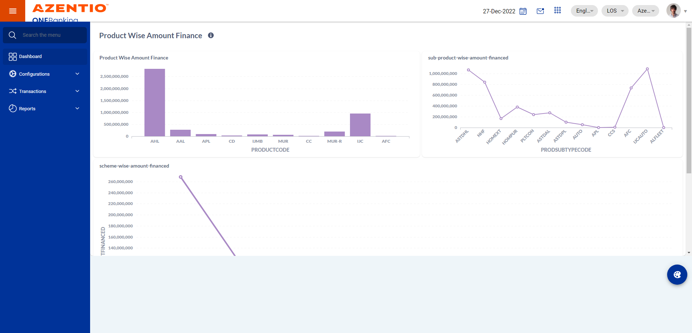And go to configuration main menustepdefinitions.HooksClass.addScreenshot(io.cucumber.java.Scenario)screenshot
Then login with valid maker credentialsstepdefinitions.HooksClass.addScreenshot(io.cucumber.java.Scenario)screenshot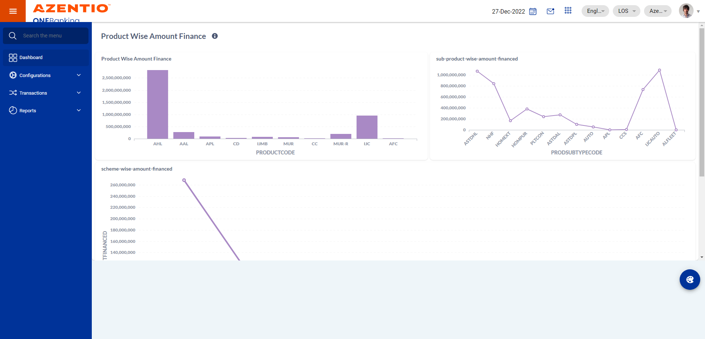And go to configuration main menustepdefinitions.HooksClass.addScreenshot(io.cucumber.java.Scenario)screenshot And click on config Manager main modulestepdefinitions.HooksClass.addScreenshot(io.cucumber.java.Scenario)screenshotAnd Click the Eye icon of report masterstepdefinitions.HooksClass.addScreenshot(io.cucumber.java.Scenario)screenshotThen Choose the data set id for report master creationstepdefinitions.HooksClass.addScreenshot(io.cucumber.java.Scenario)screenshot
And click on config Manager main modulestepdefinitions.HooksClass.addScreenshot(io.cucumber.java.Scenario)screenshotAnd Click the Eye icon of report masterstepdefinitions.HooksClass.addScreenshot(io.cucumber.java.Scenario)screenshotThen Choose the data set id for report master creationstepdefinitions.HooksClass.addScreenshot(io.cucumber.java.Scenario)screenshot Then Click the add button in the report masterstepdefinitions.HooksClass.addScreenshot(io.cucumber.java.Scenario)screenshotAnd Enter the report name in report masterstepdefinitions.HooksClass.addScreenshot(io.cucumber.java.Scenario)screenshot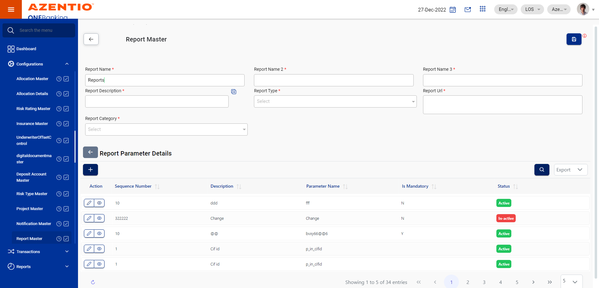Then Fill the report name2 in report masterstepdefinitions.HooksClass.addScreenshot(io.cucumber.java.Scenario)screenshotAnd Enter the report name3 in report masterstepdefinitions.HooksClass.addScreenshot(io.cucumber.java.Scenario)screenshot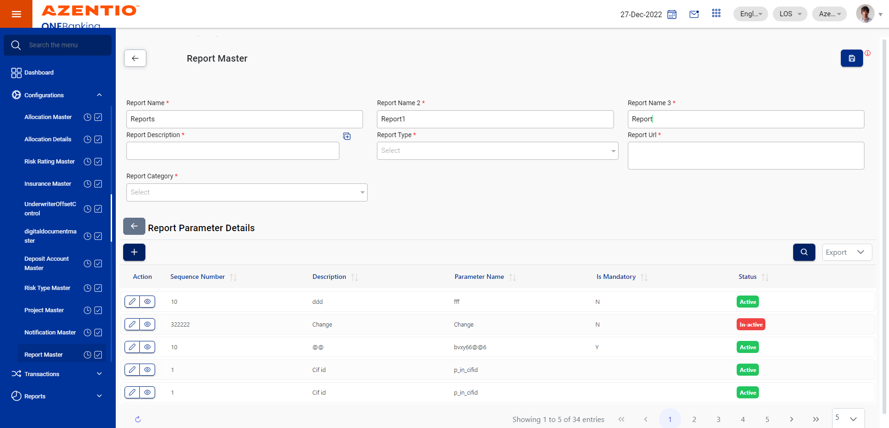Then Fill the report description in report masterstepdefinitions.HooksClass.addScreenshot(io.cucumber.java.Scenario)screenshotAnd Choose the report type in report masterstepdefinitions.HooksClass.addScreenshot(io.cucumber.java.Scenario)screenshot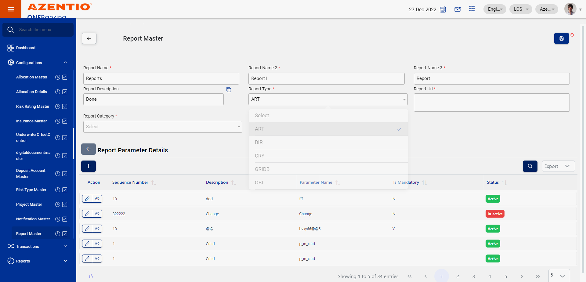Then Fill the report URL in report masterstepdefinitions.HooksClass.addScreenshot(io.cucumber.java.Scenario)screenshotAnd Enter the report catogory in report masterstepdefinitions.HooksClass.addScreenshot(io.cucumber.java.Scenario)screenshot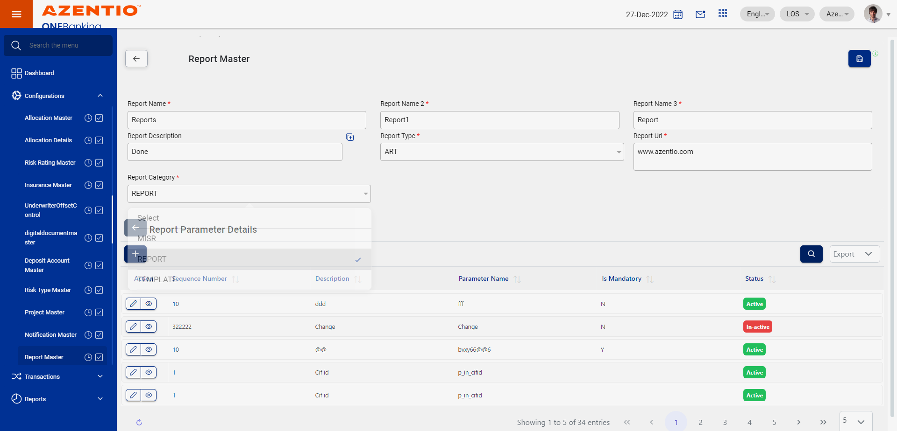Then Save the record in report masterstepdefinitions.HooksClass.addScreenshot(io.cucumber.java.Scenario)screenshot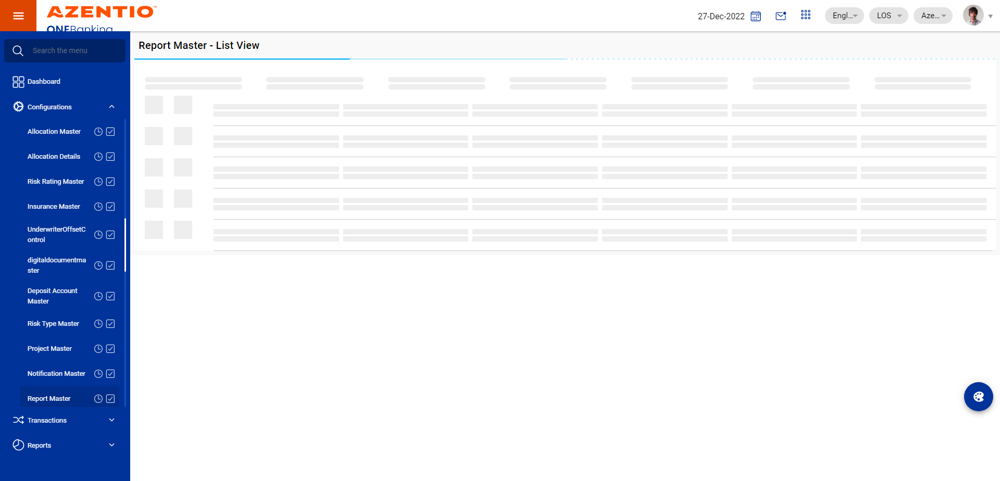And Click the inbox in report masterstepdefinitions.HooksClass.addScreenshot(io.cucumber.java.Scenario)screenshot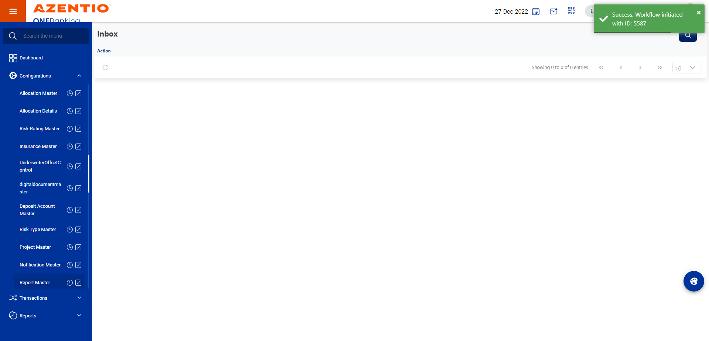Then Search the record in search field in report masterstepdefinitions.HooksClass.addScreenshot(io.cucumber.java.Scenario)screenshot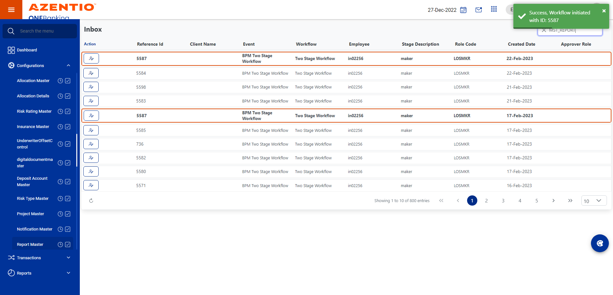And Get the reference id in report masterstepdefinitions.HooksClass.addScreenshot(io.cucumber.java.Scenario)screenshot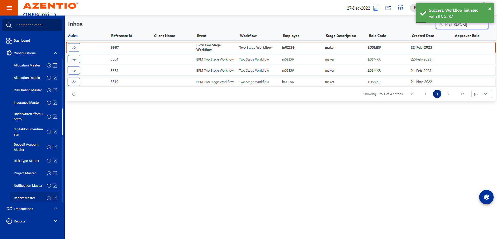Then Click the first action icon in report masterstepdefinitions.HooksClass.addScreenshot(io.cucumber.java.Scenario)screenshot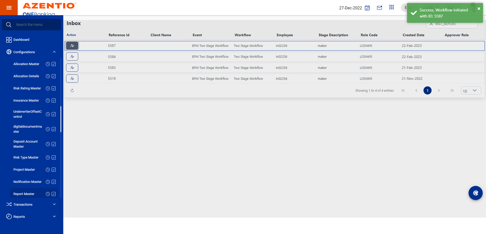And Submit the record in report masterstepdefinitions.HooksClass.addScreenshot(io.cucumber.java.Scenario)screenshot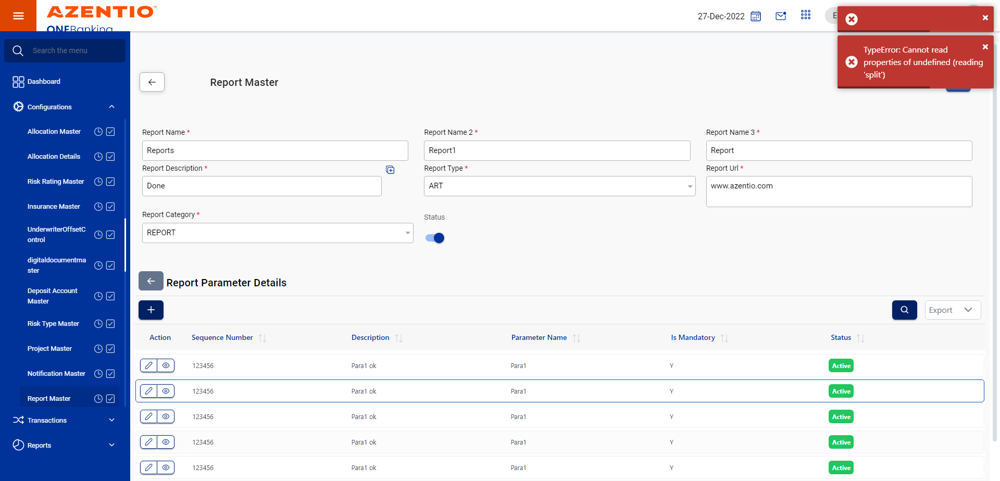Then Get the checker id in report masterstepdefinitions.HooksClass.addScreenshot(io.cucumber.java.Scenario)screenshotFailTo verify Checker user is able to Approve the record in report MasterThen Choose the data set id for checker approval in report masterstepdefinitions.HooksClass.addScreenshot(io.cucumber.java.Scenario)screenshot
Then Click the add button in the report masterstepdefinitions.HooksClass.addScreenshot(io.cucumber.java.Scenario)screenshotAnd Enter the report name in report masterstepdefinitions.HooksClass.addScreenshot(io.cucumber.java.Scenario)screenshot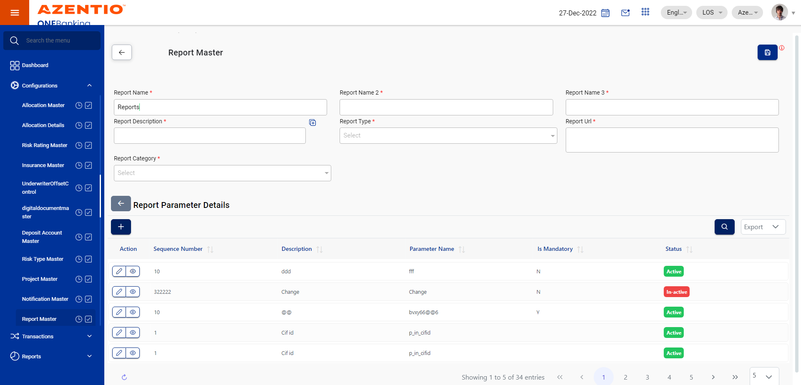Then Fill the report name2 in report masterstepdefinitions.HooksClass.addScreenshot(io.cucumber.java.Scenario)screenshotAnd Enter the report name3 in report masterstepdefinitions.HooksClass.addScreenshot(io.cucumber.java.Scenario)screenshot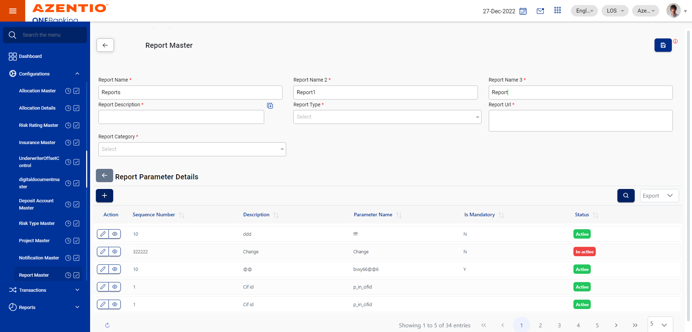Then Fill the report description in report masterstepdefinitions.HooksClass.addScreenshot(io.cucumber.java.Scenario)screenshotAnd Choose the report type in report masterstepdefinitions.HooksClass.addScreenshot(io.cucumber.java.Scenario)screenshot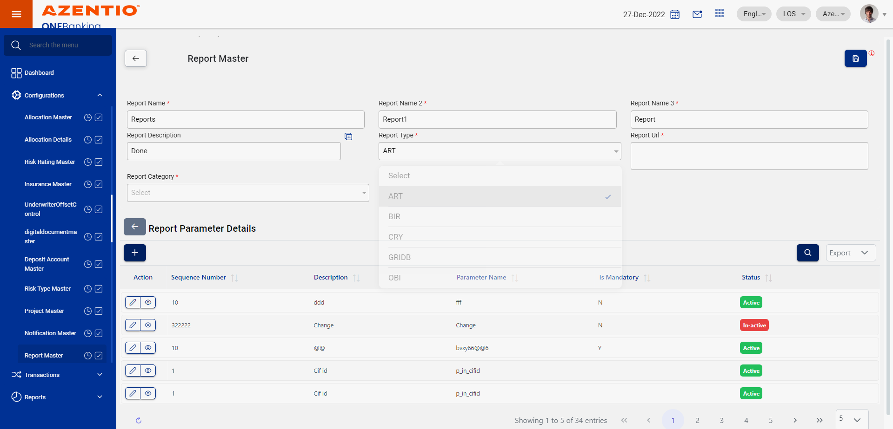Then Fill the report URL in report masterstepdefinitions.HooksClass.addScreenshot(io.cucumber.java.Scenario)screenshotAnd Enter the report catogory in report masterstepdefinitions.HooksClass.addScreenshot(io.cucumber.java.Scenario)screenshot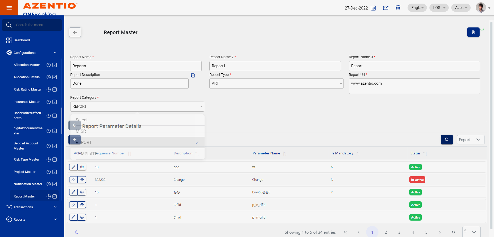Then Save the record in report masterstepdefinitions.HooksClass.addScreenshot(io.cucumber.java.Scenario)screenshot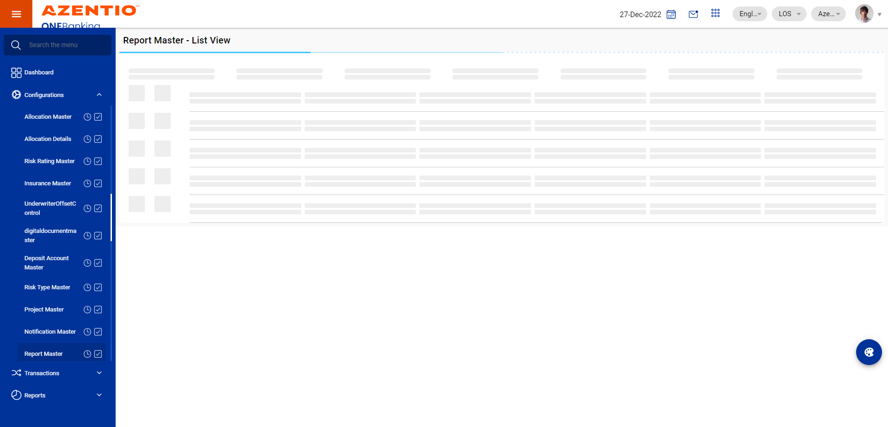And Click the inbox in report masterstepdefinitions.HooksClass.addScreenshot(io.cucumber.java.Scenario)screenshot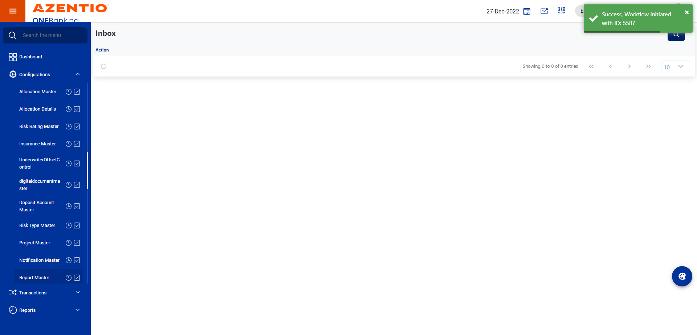Then Search the record in search field in report masterstepdefinitions.HooksClass.addScreenshot(io.cucumber.java.Scenario)screenshot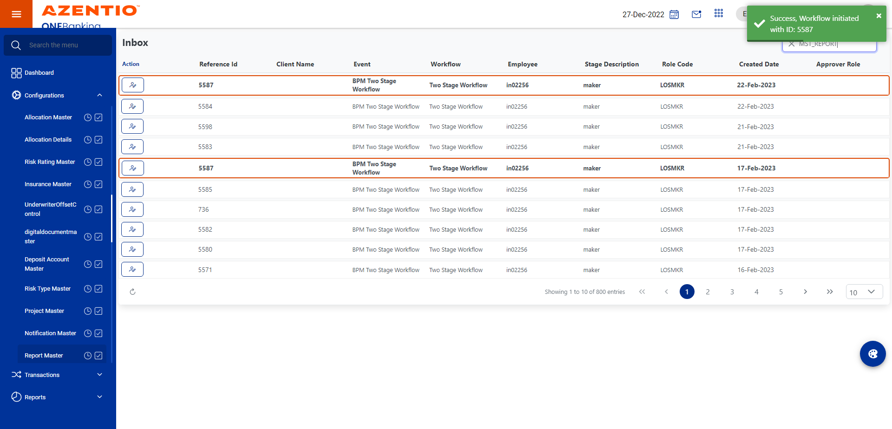And Get the reference id in report masterstepdefinitions.HooksClass.addScreenshot(io.cucumber.java.Scenario)screenshot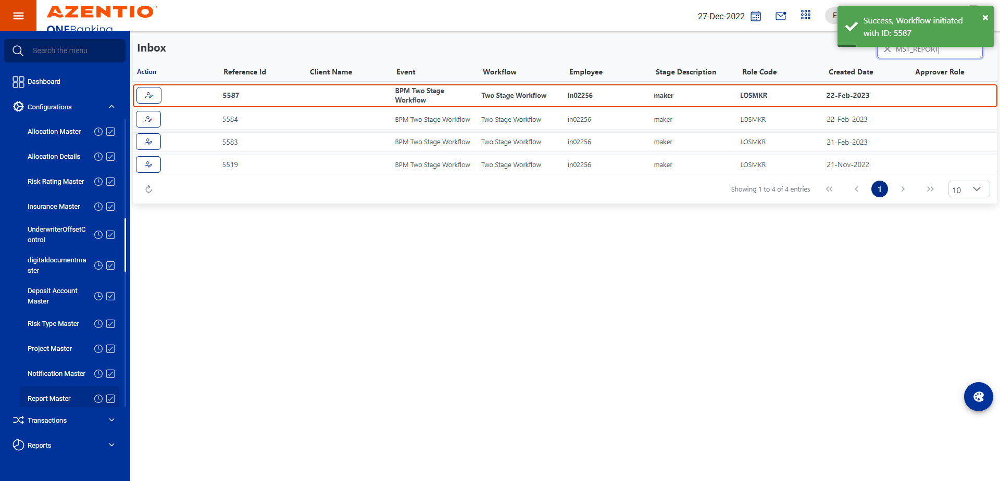Then Click the first action icon in report masterstepdefinitions.HooksClass.addScreenshot(io.cucumber.java.Scenario)screenshot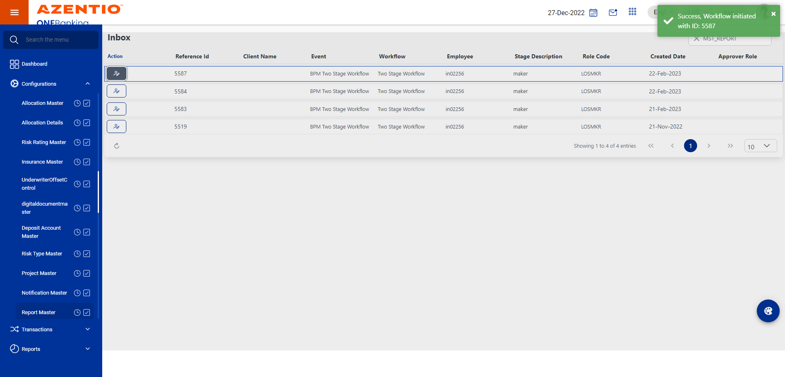And Submit the record in report masterstepdefinitions.HooksClass.addScreenshot(io.cucumber.java.Scenario)screenshot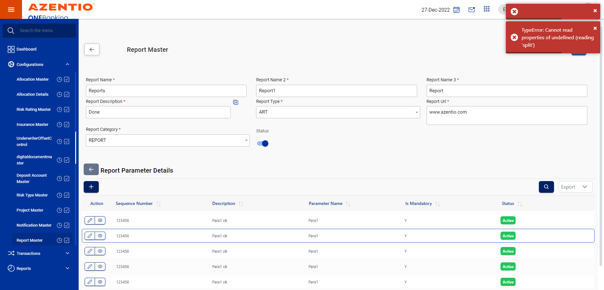Then Get the checker id in report masterstepdefinitions.HooksClass.addScreenshot(io.cucumber.java.Scenario)screenshotFailTo verify Checker user is able to Approve the record in report MasterThen Choose the data set id for checker approval in report masterstepdefinitions.HooksClass.addScreenshot(io.cucumber.java.Scenario)screenshot Given Get the URL and login as Checker in report masterstepdefinitions.HooksClass.addScreenshot(io.cucumber.java.Scenario)screenshot
Given Get the URL and login as Checker in report masterstepdefinitions.HooksClass.addScreenshot(io.cucumber.java.Scenario)screenshot Then Click the inbox in the report masterStep skippedAnd Search the reference id and click the respective action icon in report masterStep skippedThen Click the approve button in the report masterStep skippedAnd Enter the alert remark in the report masterStep skippedThen Give the final approve in the report masterStep skippedAnd Verify the record get approved in report masterStep skippedPassTo verify Approved record is view in the maker list view in report MasterGiven Navigate to ULS application URLstepdefinitions.HooksClass.addScreenshot(io.cucumber.java.Scenario)screenshot
Then Click the inbox in the report masterStep skippedAnd Search the reference id and click the respective action icon in report masterStep skippedThen Click the approve button in the report masterStep skippedAnd Enter the alert remark in the report masterStep skippedThen Give the final approve in the report masterStep skippedAnd Verify the record get approved in report masterStep skippedPassTo verify Approved record is view in the maker list view in report MasterGiven Navigate to ULS application URLstepdefinitions.HooksClass.addScreenshot(io.cucumber.java.Scenario)screenshot Then login with valid maker credentialsstepdefinitions.HooksClass.addScreenshot(io.cucumber.java.Scenario)screenshotAnd go to configuration main menustepdefinitions.HooksClass.addScreenshot(io.cucumber.java.Scenario)screenshotAnd click on config Manager main modulestepdefinitions.HooksClass.addScreenshot(io.cucumber.java.Scenario)screenshotAnd Click the Eye icon of report masterstepdefinitions.HooksClass.addScreenshot(io.cucumber.java.Scenario)screenshotThen Verify that approved record is present in the list viewstepdefinitions.HooksClass.addScreenshot(io.cucumber.java.Scenario)screenshot
Then login with valid maker credentialsstepdefinitions.HooksClass.addScreenshot(io.cucumber.java.Scenario)screenshotAnd go to configuration main menustepdefinitions.HooksClass.addScreenshot(io.cucumber.java.Scenario)screenshotAnd click on config Manager main modulestepdefinitions.HooksClass.addScreenshot(io.cucumber.java.Scenario)screenshotAnd Click the Eye icon of report masterstepdefinitions.HooksClass.addScreenshot(io.cucumber.java.Scenario)screenshotThen Verify that approved record is present in the list viewstepdefinitions.HooksClass.addScreenshot(io.cucumber.java.Scenario)screenshot FailTo verify user is able to add new Report Master record in the system by entering valid data in report masterGiven Navigate to ULS application URLstepdefinitions.HooksClass.addScreenshot(io.cucumber.java.Scenario)screenshot
FailTo verify user is able to add new Report Master record in the system by entering valid data in report masterGiven Navigate to ULS application URLstepdefinitions.HooksClass.addScreenshot(io.cucumber.java.Scenario)screenshot Then login with valid maker credentialsstepdefinitions.HooksClass.addScreenshot(io.cucumber.java.Scenario)screenshotAnd go to configuration main menustepdefinitions.HooksClass.addScreenshot(io.cucumber.java.Scenario)screenshot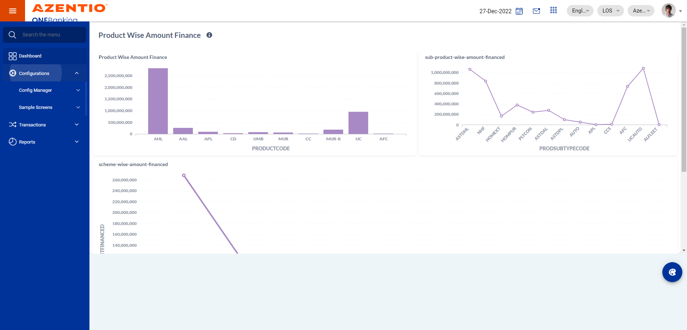And click on config Manager main modulestepdefinitions.HooksClass.addScreenshot(io.cucumber.java.Scenario)screenshot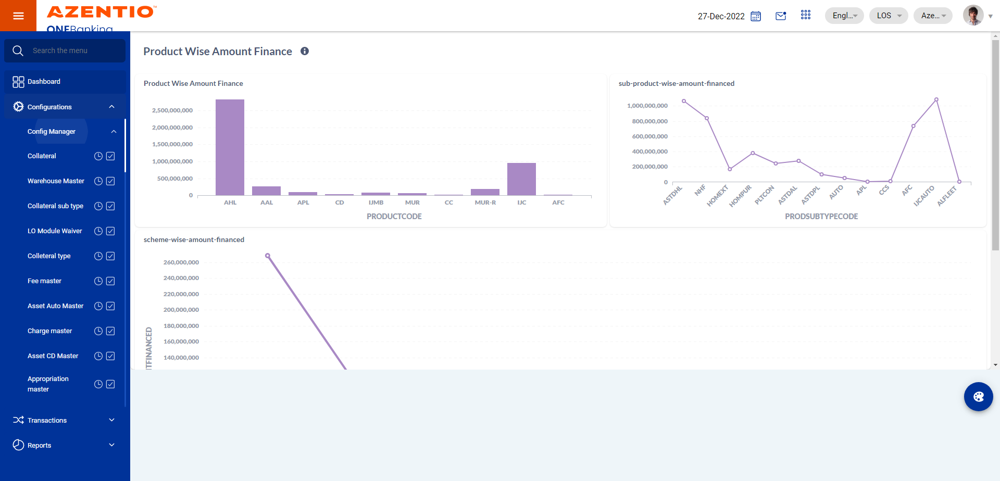Then choose the data set id for creation of report master for rejectionstepdefinitions.HooksClass.addScreenshot(io.cucumber.java.Scenario)screenshot
Then login with valid maker credentialsstepdefinitions.HooksClass.addScreenshot(io.cucumber.java.Scenario)screenshotAnd go to configuration main menustepdefinitions.HooksClass.addScreenshot(io.cucumber.java.Scenario)screenshot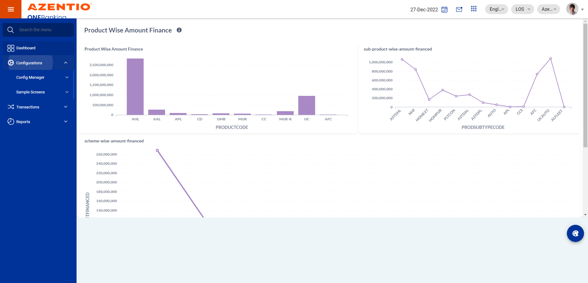And click on config Manager main modulestepdefinitions.HooksClass.addScreenshot(io.cucumber.java.Scenario)screenshot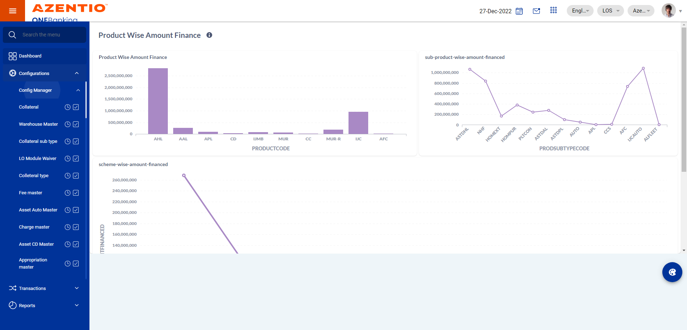Then choose the data set id for creation of report master for rejectionstepdefinitions.HooksClass.addScreenshot(io.cucumber.java.Scenario)screenshot And Click the Eye icon of report masterstepdefinitions.HooksClass.addScreenshot(io.cucumber.java.Scenario)screenshotThen Click the add button in the report masterstepdefinitions.HooksClass.addScreenshot(io.cucumber.java.Scenario)screenshot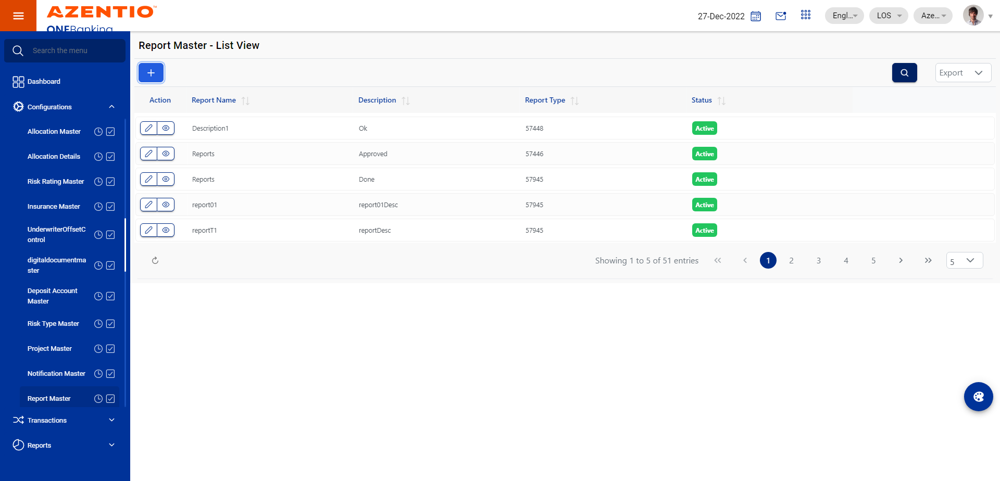And Enter the report name in report masterstepdefinitions.HooksClass.addScreenshot(io.cucumber.java.Scenario)screenshot
And Click the Eye icon of report masterstepdefinitions.HooksClass.addScreenshot(io.cucumber.java.Scenario)screenshotThen Click the add button in the report masterstepdefinitions.HooksClass.addScreenshot(io.cucumber.java.Scenario)screenshot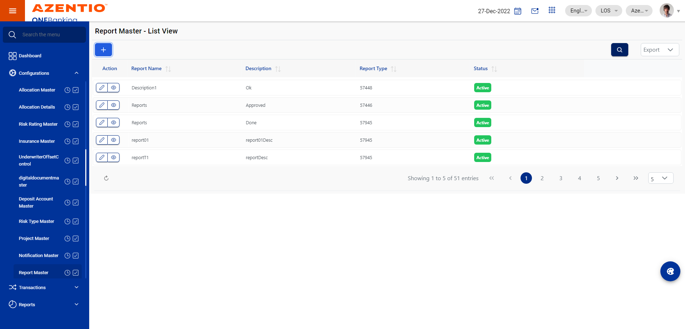And Enter the report name in report masterstepdefinitions.HooksClass.addScreenshot(io.cucumber.java.Scenario)screenshot Then Fill the report name2 in report masterStep skippedAnd Enter the report name3 in report masterStep skippedThen Fill the report description in report masterStep skippedAnd Choose the report type in report masterStep skippedThen Fill the report URL in report masterStep skippedAnd Enter the report catogory in report masterStep skippedThen Save the record in report masterStep skippedAnd Click the inbox in report masterStep skippedThen Search the record in search field in report masterStep skippedAnd Get the reference id in report master for rejectStep skippedThen Click the first action icon in report masterStep skippedAnd Submit the record in report masterStep skippedThen Get the checker id in report master for rejection flowStep skippedFailTo verify Checker user is able to Reject the record in report MasterThen choose the data set id for creation of report master for rejectionstepdefinitions.HooksClass.addScreenshot(io.cucumber.java.Scenario)screenshot
Then Fill the report name2 in report masterStep skippedAnd Enter the report name3 in report masterStep skippedThen Fill the report description in report masterStep skippedAnd Choose the report type in report masterStep skippedThen Fill the report URL in report masterStep skippedAnd Enter the report catogory in report masterStep skippedThen Save the record in report masterStep skippedAnd Click the inbox in report masterStep skippedThen Search the record in search field in report masterStep skippedAnd Get the reference id in report master for rejectStep skippedThen Click the first action icon in report masterStep skippedAnd Submit the record in report masterStep skippedThen Get the checker id in report master for rejection flowStep skippedFailTo verify Checker user is able to Reject the record in report MasterThen choose the data set id for creation of report master for rejectionstepdefinitions.HooksClass.addScreenshot(io.cucumber.java.Scenario)screenshot Given Get the URL and login as Checker in report masterstepdefinitions.HooksClass.addScreenshot(io.cucumber.java.Scenario)screenshot
Given Get the URL and login as Checker in report masterstepdefinitions.HooksClass.addScreenshot(io.cucumber.java.Scenario)screenshot Then Click the inbox in the report masterStep skippedAnd Search the reference id and click the respective action icon in report master for rejectionStep skippedThen Click the reject button in the report masterStep skippedAnd Enter the reject alert remark in the report masterStep skippedThen Give the final reject in the report masterStep skippedAnd Verify the record get rejected in report masterStep skippedPassTo verify Reject record is view in the maker list view in report MasterGiven Navigate to ULS application URLstepdefinitions.HooksClass.addScreenshot(io.cucumber.java.Scenario)screenshot
Then Click the inbox in the report masterStep skippedAnd Search the reference id and click the respective action icon in report master for rejectionStep skippedThen Click the reject button in the report masterStep skippedAnd Enter the reject alert remark in the report masterStep skippedThen Give the final reject in the report masterStep skippedAnd Verify the record get rejected in report masterStep skippedPassTo verify Reject record is view in the maker list view in report MasterGiven Navigate to ULS application URLstepdefinitions.HooksClass.addScreenshot(io.cucumber.java.Scenario)screenshot Then login with valid maker credentialsstepdefinitions.HooksClass.addScreenshot(io.cucumber.java.Scenario)screenshot
Then login with valid maker credentialsstepdefinitions.HooksClass.addScreenshot(io.cucumber.java.Scenario)screenshot And go to configuration main menustepdefinitions.HooksClass.addScreenshot(io.cucumber.java.Scenario)screenshotAnd click on config Manager main modulestepdefinitions.HooksClass.addScreenshot(io.cucumber.java.Scenario)screenshotAnd Click the Eye icon of report masterstepdefinitions.HooksClass.addScreenshot(io.cucumber.java.Scenario)screenshotThen Verify that rejected record is not present in the list viewstepdefinitions.HooksClass.addScreenshot(io.cucumber.java.Scenario)screenshotFailTo verify user is able to add new Report Master record in the system by entering valid data in report masterGiven Navigate to ULS application URLstepdefinitions.HooksClass.addScreenshot(io.cucumber.java.Scenario)screenshot
And go to configuration main menustepdefinitions.HooksClass.addScreenshot(io.cucumber.java.Scenario)screenshotAnd click on config Manager main modulestepdefinitions.HooksClass.addScreenshot(io.cucumber.java.Scenario)screenshotAnd Click the Eye icon of report masterstepdefinitions.HooksClass.addScreenshot(io.cucumber.java.Scenario)screenshotThen Verify that rejected record is not present in the list viewstepdefinitions.HooksClass.addScreenshot(io.cucumber.java.Scenario)screenshotFailTo verify user is able to add new Report Master record in the system by entering valid data in report masterGiven Navigate to ULS application URLstepdefinitions.HooksClass.addScreenshot(io.cucumber.java.Scenario)screenshot Then login with valid maker credentialsstepdefinitions.HooksClass.addScreenshot(io.cucumber.java.Scenario)screenshotAnd go to configuration main menustepdefinitions.HooksClass.addScreenshot(io.cucumber.java.Scenario)screenshotAnd click on config Manager main modulestepdefinitions.HooksClass.addScreenshot(io.cucumber.java.Scenario)screenshotAnd Choose the data set id for return the records in report masterstepdefinitions.HooksClass.addScreenshot(io.cucumber.java.Scenario)screenshotAnd Click the Eye icon of report masterstepdefinitions.HooksClass.addScreenshot(io.cucumber.java.Scenario)screenshotThen Click the add button in the report masterstepdefinitions.HooksClass.addScreenshot(io.cucumber.java.Scenario)screenshotAnd Enter the report name in report masterstepdefinitions.HooksClass.addScreenshot(io.cucumber.java.Scenario)screenshotThen Fill the report name2 in report masterStep skippedAnd Enter the report name3 in report masterStep skippedThen Fill the report description in report masterStep skippedAnd Choose the report type in report masterStep skippedThen Fill the report URL in report masterStep skippedAnd Enter the report catogory in report masterStep skippedThen Save the record in report masterStep skippedAnd Click the inbox in report masterStep skippedThen Search the record in search field in report masterStep skippedAnd Get the reference id in report master for returnStep skippedThen Click the first action icon in report masterStep skippedAnd Submit the record in report masterStep skippedThen Get the checker id in report master for returnStep skippedFailTo verify Checker user is able to Return the record in report MasterAnd Choose the data set id for return the records in report masterstepdefinitions.HooksClass.addScreenshot(io.cucumber.java.Scenario)screenshot
Then login with valid maker credentialsstepdefinitions.HooksClass.addScreenshot(io.cucumber.java.Scenario)screenshotAnd go to configuration main menustepdefinitions.HooksClass.addScreenshot(io.cucumber.java.Scenario)screenshotAnd click on config Manager main modulestepdefinitions.HooksClass.addScreenshot(io.cucumber.java.Scenario)screenshotAnd Choose the data set id for return the records in report masterstepdefinitions.HooksClass.addScreenshot(io.cucumber.java.Scenario)screenshotAnd Click the Eye icon of report masterstepdefinitions.HooksClass.addScreenshot(io.cucumber.java.Scenario)screenshotThen Click the add button in the report masterstepdefinitions.HooksClass.addScreenshot(io.cucumber.java.Scenario)screenshotAnd Enter the report name in report masterstepdefinitions.HooksClass.addScreenshot(io.cucumber.java.Scenario)screenshotThen Fill the report name2 in report masterStep skippedAnd Enter the report name3 in report masterStep skippedThen Fill the report description in report masterStep skippedAnd Choose the report type in report masterStep skippedThen Fill the report URL in report masterStep skippedAnd Enter the report catogory in report masterStep skippedThen Save the record in report masterStep skippedAnd Click the inbox in report masterStep skippedThen Search the record in search field in report masterStep skippedAnd Get the reference id in report master for returnStep skippedThen Click the first action icon in report masterStep skippedAnd Submit the record in report masterStep skippedThen Get the checker id in report master for returnStep skippedFailTo verify Checker user is able to Return the record in report MasterAnd Choose the data set id for return the records in report masterstepdefinitions.HooksClass.addScreenshot(io.cucumber.java.Scenario)screenshot Given Get the URL and login as Checker in report masterstepdefinitions.HooksClass.addScreenshot(io.cucumber.java.Scenario)screenshot
Given Get the URL and login as Checker in report masterstepdefinitions.HooksClass.addScreenshot(io.cucumber.java.Scenario)screenshot Then Click the inbox in the report masterStep skippedAnd Search the reference id and click the respective action icon in report master for returnStep skippedThen Click the return button in the report masterStep skippedAnd Enter the return alert remark in the report masterStep skippedThen Give the final return in the report masterStep skippedAnd Verify the record get returned in report masterStep skippedPassTo verify Returned record is view in the maker list view in report MasterGiven Navigate to ULS application URLstepdefinitions.HooksClass.addScreenshot(io.cucumber.java.Scenario)screenshot
Then Click the inbox in the report masterStep skippedAnd Search the reference id and click the respective action icon in report master for returnStep skippedThen Click the return button in the report masterStep skippedAnd Enter the return alert remark in the report masterStep skippedThen Give the final return in the report masterStep skippedAnd Verify the record get returned in report masterStep skippedPassTo verify Returned record is view in the maker list view in report MasterGiven Navigate to ULS application URLstepdefinitions.HooksClass.addScreenshot(io.cucumber.java.Scenario)screenshot Then login with valid maker credentialsstepdefinitions.HooksClass.addScreenshot(io.cucumber.java.Scenario)screenshotAnd go to configuration main menustepdefinitions.HooksClass.addScreenshot(io.cucumber.java.Scenario)screenshotAnd click on config Manager main modulestepdefinitions.HooksClass.addScreenshot(io.cucumber.java.Scenario)screenshotAnd Click the temp view in the report masterstepdefinitions.HooksClass.addScreenshot(io.cucumber.java.Scenario)screenshotThen Verify that returned record is present in the temp viewstepdefinitions.HooksClass.addScreenshot(io.cucumber.java.Scenario)screenshotFailTo verify maker user can able to create the report master record with invalid inputsGiven Navigate to ULS application URLstepdefinitions.HooksClass.addScreenshot(io.cucumber.java.Scenario)screenshot
Then login with valid maker credentialsstepdefinitions.HooksClass.addScreenshot(io.cucumber.java.Scenario)screenshotAnd go to configuration main menustepdefinitions.HooksClass.addScreenshot(io.cucumber.java.Scenario)screenshotAnd click on config Manager main modulestepdefinitions.HooksClass.addScreenshot(io.cucumber.java.Scenario)screenshotAnd Click the temp view in the report masterstepdefinitions.HooksClass.addScreenshot(io.cucumber.java.Scenario)screenshotThen Verify that returned record is present in the temp viewstepdefinitions.HooksClass.addScreenshot(io.cucumber.java.Scenario)screenshotFailTo verify maker user can able to create the report master record with invalid inputsGiven Navigate to ULS application URLstepdefinitions.HooksClass.addScreenshot(io.cucumber.java.Scenario)screenshot Then login with valid maker credentialsstepdefinitions.HooksClass.addScreenshot(io.cucumber.java.Scenario)screenshotAnd go to configuration main menustepdefinitions.HooksClass.addScreenshot(io.cucumber.java.Scenario)screenshotAnd Go to config manager main menustepdefinitions.HooksClass.addScreenshot(io.cucumber.java.Scenario)screenshotAnd click on view button in report masterstepdefinitions.HooksClass.addScreenshot(io.cucumber.java.Scenario)screenshotAnd click on add button in report masterstepdefinitions.HooksClass.addScreenshot(io.cucumber.java.Scenario)screenshot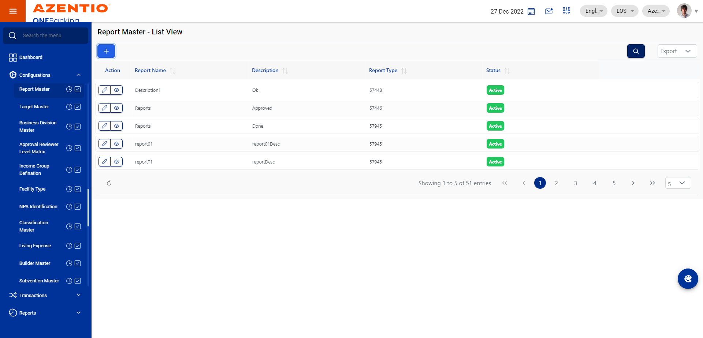Then verify back button and save buttons are appearedstepdefinitions.HooksClass.addScreenshot(io.cucumber.java.Scenario)screenshot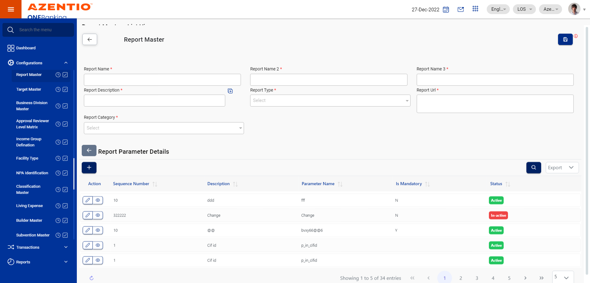And get the test data of report master fifth test casestepdefinitions.HooksClass.addScreenshot(io.cucumber.java.Scenario)screenshotAnd click on save button inreport master without filling the detailsstepdefinitions.HooksClass.addScreenshot(io.cucumber.java.Scenario)screenshot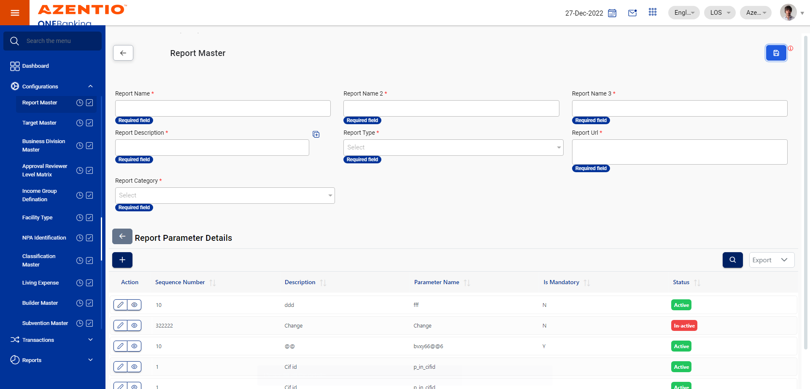Then verify system should through the validation for the empty fieldsstepdefinitions.HooksClass.addScreenshot(io.cucumber.java.Scenario)screenshot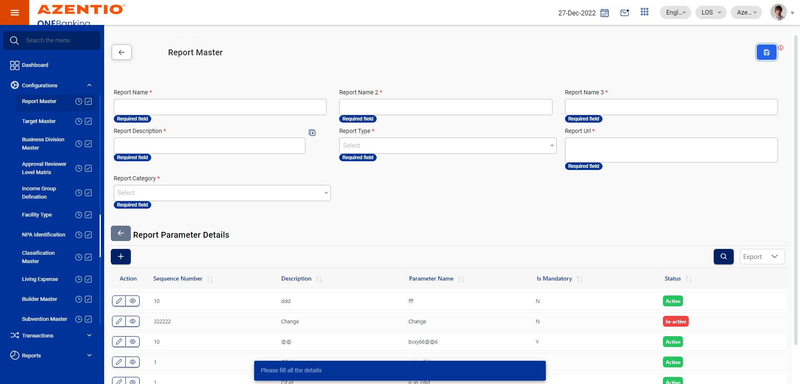And enter special charecters in text boxstepdefinitions.HooksClass.addScreenshot(io.cucumber.java.Scenario)screenshot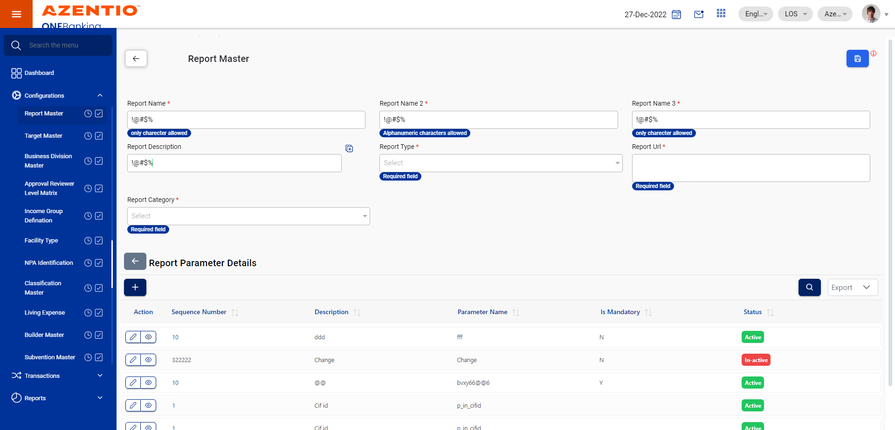Then verify system should through the validation for report masterstepdefinitions.HooksClass.addScreenshot(io.cucumber.java.Scenario)screenshot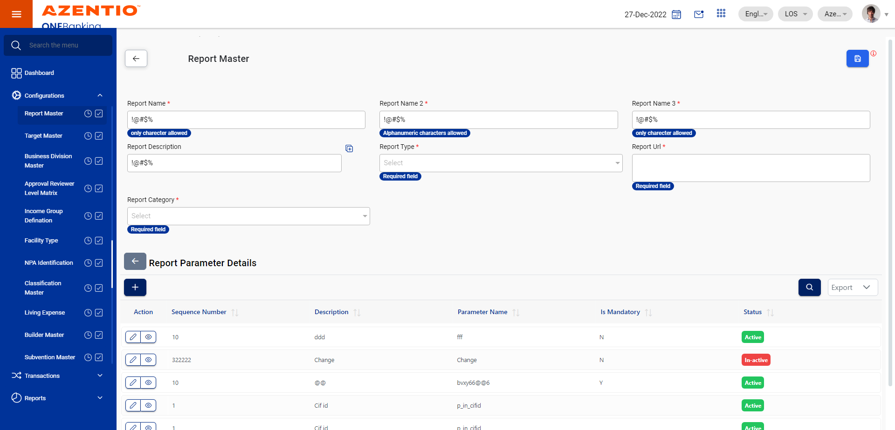And click on back button in report masterStep skippedThen verify report master screen should get back or notStep skippedFailTo verify system allow user to modify the Report Master before approve the recordGiven Navigate to ULS application URLstepdefinitions.HooksClass.addScreenshot(io.cucumber.java.Scenario)screenshot
Then login with valid maker credentialsstepdefinitions.HooksClass.addScreenshot(io.cucumber.java.Scenario)screenshotAnd go to configuration main menustepdefinitions.HooksClass.addScreenshot(io.cucumber.java.Scenario)screenshotAnd Go to config manager main menustepdefinitions.HooksClass.addScreenshot(io.cucumber.java.Scenario)screenshotAnd click on view button in report masterstepdefinitions.HooksClass.addScreenshot(io.cucumber.java.Scenario)screenshotAnd click on add button in report masterstepdefinitions.HooksClass.addScreenshot(io.cucumber.java.Scenario)screenshot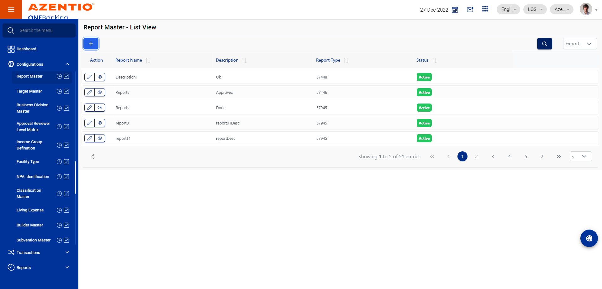Then verify back button and save buttons are appearedstepdefinitions.HooksClass.addScreenshot(io.cucumber.java.Scenario)screenshot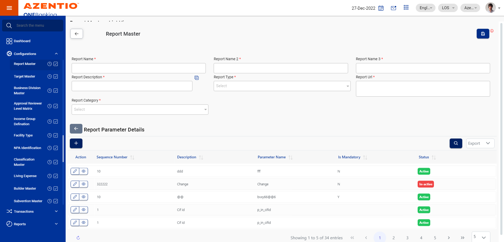And get the test data of report master fifth test casestepdefinitions.HooksClass.addScreenshot(io.cucumber.java.Scenario)screenshotAnd click on save button inreport master without filling the detailsstepdefinitions.HooksClass.addScreenshot(io.cucumber.java.Scenario)screenshot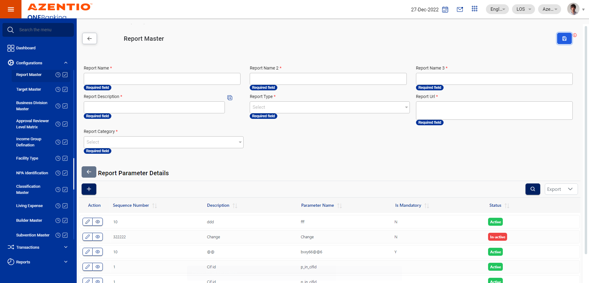Then verify system should through the validation for the empty fieldsstepdefinitions.HooksClass.addScreenshot(io.cucumber.java.Scenario)screenshot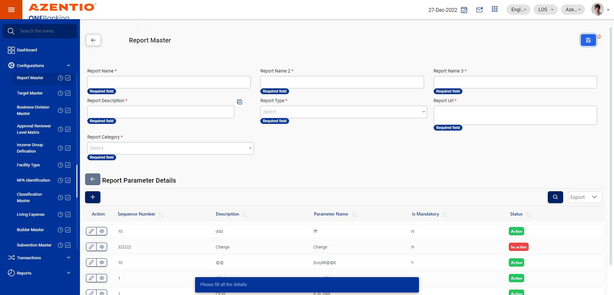And enter special charecters in text boxstepdefinitions.HooksClass.addScreenshot(io.cucumber.java.Scenario)screenshot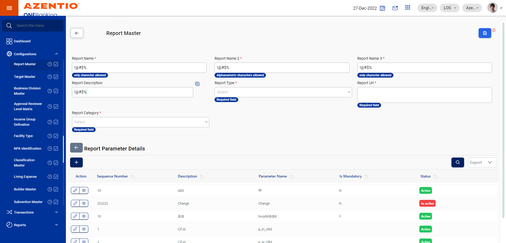Then verify system should through the validation for report masterstepdefinitions.HooksClass.addScreenshot(io.cucumber.java.Scenario)screenshot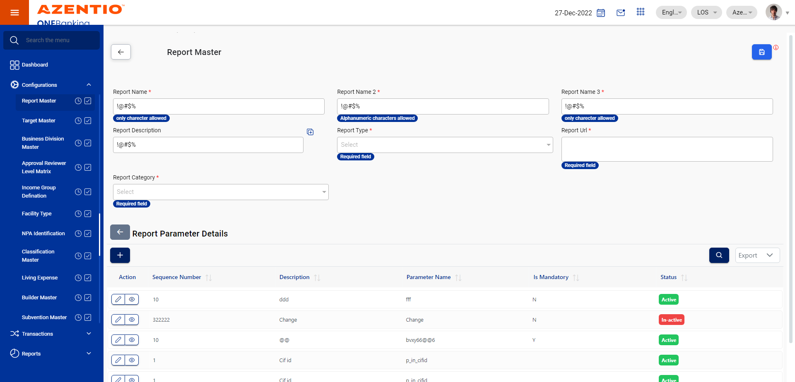And click on back button in report masterStep skippedThen verify report master screen should get back or notStep skippedFailTo verify system allow user to modify the Report Master before approve the recordGiven Navigate to ULS application URLstepdefinitions.HooksClass.addScreenshot(io.cucumber.java.Scenario)screenshot Then login with valid maker credentialsstepdefinitions.HooksClass.addScreenshot(io.cucumber.java.Scenario)screenshotAnd go to configuration main menustepdefinitions.HooksClass.addScreenshot(io.cucumber.java.Scenario)screenshotAnd click on config Manager main modulestepdefinitions.HooksClass.addScreenshot(io.cucumber.java.Scenario)screenshotThen user should navigate to report masterstepdefinitions.HooksClass.addScreenshot(io.cucumber.java.Scenario)screenshotAnd click on work in progress records button of report masterStep skippedThen click on add button to create new record of report masterStep skippedThen Fill all valid fields in the report master screen for approve the recordStep skippedThen verify system display the confirmation message in the report master screen post clicking on save buttonStep skippedThen confirmation message displays in the report master screen with reference idStep skippedThen click on inbox button to select the record of report masterStep skippedAnd select the record of report master from inbox to submitStep skippedThen verify the field status is non mandatory in report masterStep skippedThen verify system allow user to modify the report master record before approve the recordStep skippedThen verify system display the confirmation message in the report master screen post clicking on save buttonStep skippedThen verify the functionality of back button in report master screenStep skippedFailTo verify system allow user to do a modification on already approved recordGiven Navigate to ULS application URLstepdefinitions.HooksClass.addScreenshot(io.cucumber.java.Scenario)screenshot
Then login with valid maker credentialsstepdefinitions.HooksClass.addScreenshot(io.cucumber.java.Scenario)screenshotAnd go to configuration main menustepdefinitions.HooksClass.addScreenshot(io.cucumber.java.Scenario)screenshotAnd click on config Manager main modulestepdefinitions.HooksClass.addScreenshot(io.cucumber.java.Scenario)screenshotThen user should navigate to report masterstepdefinitions.HooksClass.addScreenshot(io.cucumber.java.Scenario)screenshotAnd click on work in progress records button of report masterStep skippedThen click on add button to create new record of report masterStep skippedThen Fill all valid fields in the report master screen for approve the recordStep skippedThen verify system display the confirmation message in the report master screen post clicking on save buttonStep skippedThen confirmation message displays in the report master screen with reference idStep skippedThen click on inbox button to select the record of report masterStep skippedAnd select the record of report master from inbox to submitStep skippedThen verify the field status is non mandatory in report masterStep skippedThen verify system allow user to modify the report master record before approve the recordStep skippedThen verify system display the confirmation message in the report master screen post clicking on save buttonStep skippedThen verify the functionality of back button in report master screenStep skippedFailTo verify system allow user to do a modification on already approved recordGiven Navigate to ULS application URLstepdefinitions.HooksClass.addScreenshot(io.cucumber.java.Scenario)screenshot Then login with valid maker credentialsstepdefinitions.HooksClass.addScreenshot(io.cucumber.java.Scenario)screenshotAnd go to configuration main menustepdefinitions.HooksClass.addScreenshot(io.cucumber.java.Scenario)screenshot
Then login with valid maker credentialsstepdefinitions.HooksClass.addScreenshot(io.cucumber.java.Scenario)screenshotAnd go to configuration main menustepdefinitions.HooksClass.addScreenshot(io.cucumber.java.Scenario)screenshot And click on config Manager main modulestepdefinitions.HooksClass.addScreenshot(io.cucumber.java.Scenario)screenshotThen user should navigate to report masterstepdefinitions.HooksClass.addScreenshot(io.cucumber.java.Scenario)screenshot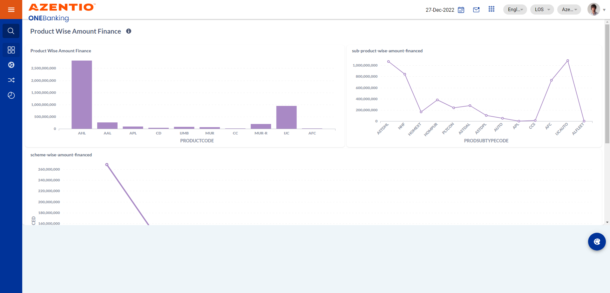And click on approved records button of report masterStep skippedThen click on edit button of report master record to modifyStep skippedThen verify system allow user to do a modification on already approved report master recordStep skippedThen verify system display the confirmation message in the report master screen post clicking on save buttonStep skippedThen confirmation message displays in the report master screen with reference idStep skippedThen click on inbox button to select the record of report masterStep skippedAnd select the record of report master from inbox to submitStep skippedThen click on submit button to submit the record of report masterStep skippedThen system should display confirmation message after submit report master recordStep skippedThen capture checker ID of report masterStep skippedThen logout user from maker stageStep skippedAnd User Login as checker to approve report master recordStep skippedThen click on inbox button to select the record of report masterStep skippedThen select the record of report master to approveStep skippedThen select approve button for approve the report master recordStep skippedThen enter remark for approve the record of report masterStep skippedThen click on approve button of the report master recordStep skippedThen system should display confirmation message after approve the report master recordStep skippedThen logout user from checker stageStep skippedAnd User Login as makerStep skippedThen user should navigate to report masterStep skippedAnd click on approved records button of report masterStep skippedThen verify all the captured modified data of report master from makers side should be saved and stored in the systemStep skippedFailTo verify checker user can able to reject the Report master updated recordGiven Navigate to ULS application URLstepdefinitions.HooksClass.addScreenshot(io.cucumber.java.Scenario)screenshot
And click on config Manager main modulestepdefinitions.HooksClass.addScreenshot(io.cucumber.java.Scenario)screenshotThen user should navigate to report masterstepdefinitions.HooksClass.addScreenshot(io.cucumber.java.Scenario)screenshot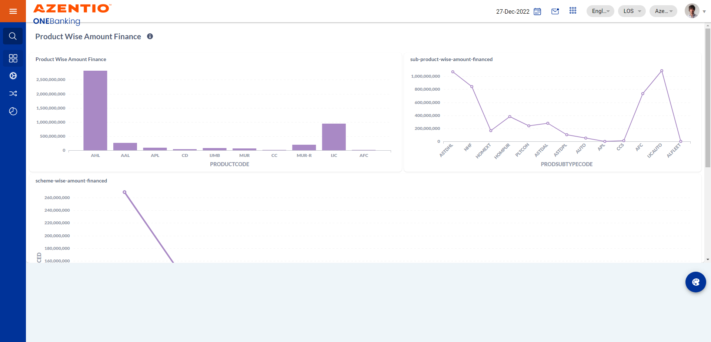And click on approved records button of report masterStep skippedThen click on edit button of report master record to modifyStep skippedThen verify system allow user to do a modification on already approved report master recordStep skippedThen verify system display the confirmation message in the report master screen post clicking on save buttonStep skippedThen confirmation message displays in the report master screen with reference idStep skippedThen click on inbox button to select the record of report masterStep skippedAnd select the record of report master from inbox to submitStep skippedThen click on submit button to submit the record of report masterStep skippedThen system should display confirmation message after submit report master recordStep skippedThen capture checker ID of report masterStep skippedThen logout user from maker stageStep skippedAnd User Login as checker to approve report master recordStep skippedThen click on inbox button to select the record of report masterStep skippedThen select the record of report master to approveStep skippedThen select approve button for approve the report master recordStep skippedThen enter remark for approve the record of report masterStep skippedThen click on approve button of the report master recordStep skippedThen system should display confirmation message after approve the report master recordStep skippedThen logout user from checker stageStep skippedAnd User Login as makerStep skippedThen user should navigate to report masterStep skippedAnd click on approved records button of report masterStep skippedThen verify all the captured modified data of report master from makers side should be saved and stored in the systemStep skippedFailTo verify checker user can able to reject the Report master updated recordGiven Navigate to ULS application URLstepdefinitions.HooksClass.addScreenshot(io.cucumber.java.Scenario)screenshot And login with checker credentialsstepdefinitions.HooksClass.addScreenshot(io.cucumber.java.Scenario)screenshotAnd click on notificatrion in checker stagestepdefinitions.HooksClass.addScreenshot(io.cucumber.java.Scenario)screenshotAnd select the record by the help of reference IDstepdefinitions.HooksClass.addScreenshot(io.cucumber.java.Scenario)screenshot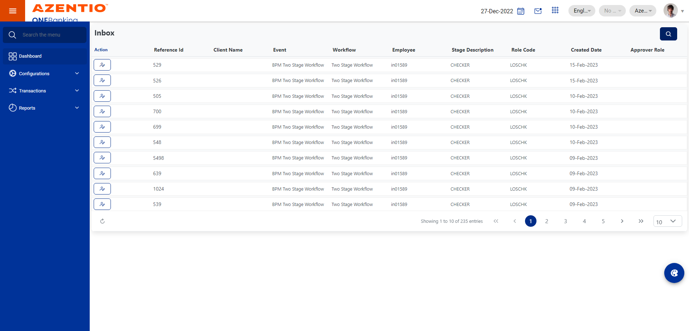And click on reject button to reject the recordStep skippedAnd enter the remark in alert tab fo rejectionStep skippedAnd click on reject button in alert boxStep skippedThen verify record is rejected in checker stageStep skippedFailTo verify checker user can able to return the Report master updated recordGiven Navigate to ULS application URLstepdefinitions.HooksClass.addScreenshot(io.cucumber.java.Scenario)screenshot
And login with checker credentialsstepdefinitions.HooksClass.addScreenshot(io.cucumber.java.Scenario)screenshotAnd click on notificatrion in checker stagestepdefinitions.HooksClass.addScreenshot(io.cucumber.java.Scenario)screenshotAnd select the record by the help of reference IDstepdefinitions.HooksClass.addScreenshot(io.cucumber.java.Scenario)screenshot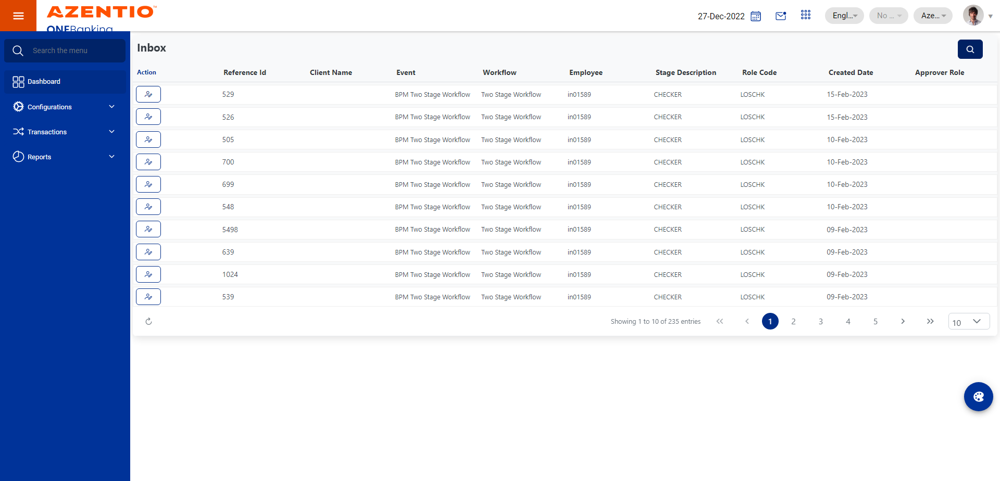And click on reject button to reject the recordStep skippedAnd enter the remark in alert tab fo rejectionStep skippedAnd click on reject button in alert boxStep skippedThen verify record is rejected in checker stageStep skippedFailTo verify checker user can able to return the Report master updated recordGiven Navigate to ULS application URLstepdefinitions.HooksClass.addScreenshot(io.cucumber.java.Scenario)screenshot And login with checker credentialsstepdefinitions.HooksClass.addScreenshot(io.cucumber.java.Scenario)screenshot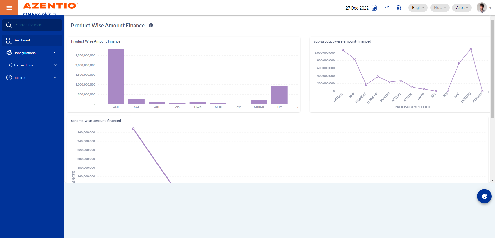And click on notificatrion in checker stagestepdefinitions.HooksClass.addScreenshot(io.cucumber.java.Scenario)screenshot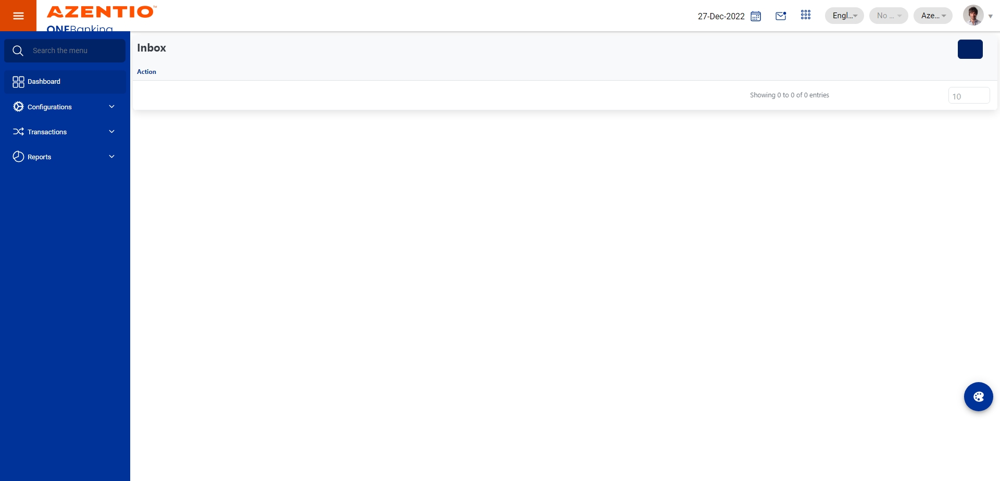And select the record by the help of reference IDstepdefinitions.HooksClass.addScreenshot(io.cucumber.java.Scenario)screenshotAnd click on return button to return the recordStep skippedAnd enter the remark in alert tab fo returnStep skippedAnd click on return button in alert boxStep skippedThen verify record is return in checker stageStep skippedFailTo verify user can able to create the report master record with invalid inputsGiven Navigate to ULS application URLstepdefinitions.HooksClass.addScreenshot(io.cucumber.java.Scenario)screenshot
And login with checker credentialsstepdefinitions.HooksClass.addScreenshot(io.cucumber.java.Scenario)screenshot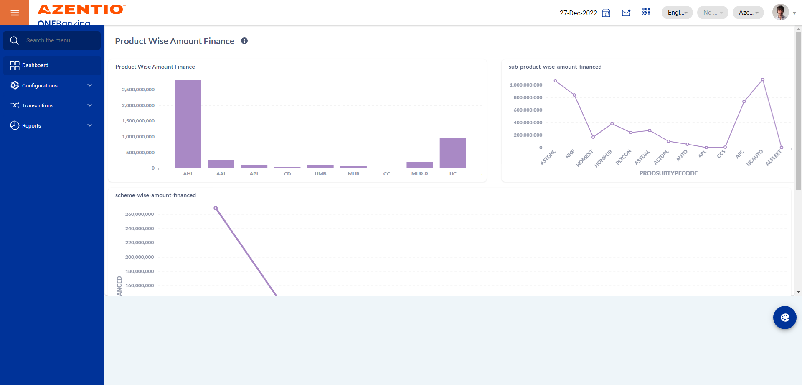And click on notificatrion in checker stagestepdefinitions.HooksClass.addScreenshot(io.cucumber.java.Scenario)screenshot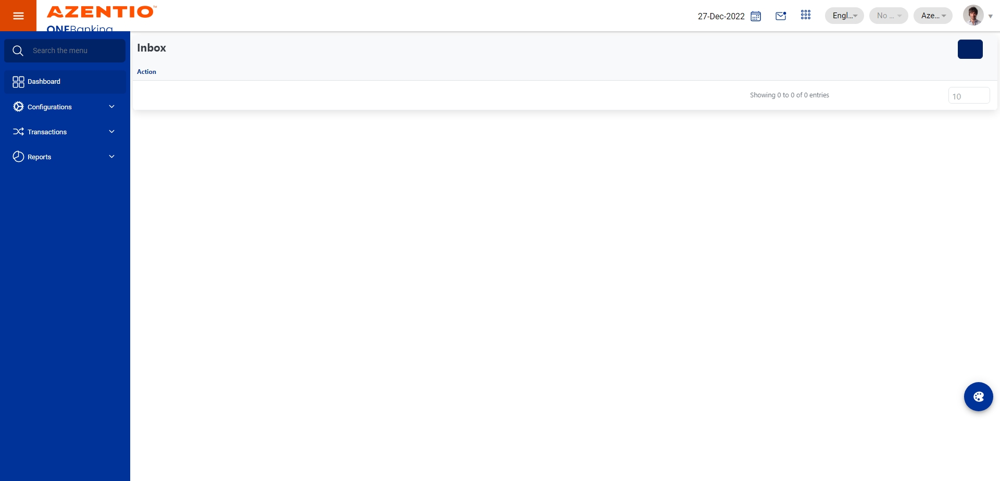And select the record by the help of reference IDstepdefinitions.HooksClass.addScreenshot(io.cucumber.java.Scenario)screenshotAnd click on return button to return the recordStep skippedAnd enter the remark in alert tab fo returnStep skippedAnd click on return button in alert boxStep skippedThen verify record is return in checker stageStep skippedFailTo verify user can able to create the report master record with invalid inputsGiven Navigate to ULS application URLstepdefinitions.HooksClass.addScreenshot(io.cucumber.java.Scenario)screenshot Then login with valid maker credentialsstepdefinitions.HooksClass.addScreenshot(io.cucumber.java.Scenario)screenshotAnd go to configuration main menustepdefinitions.HooksClass.addScreenshot(io.cucumber.java.Scenario)screenshotAnd click on config Manager main modulestepdefinitions.HooksClass.addScreenshot(io.cucumber.java.Scenario)screenshot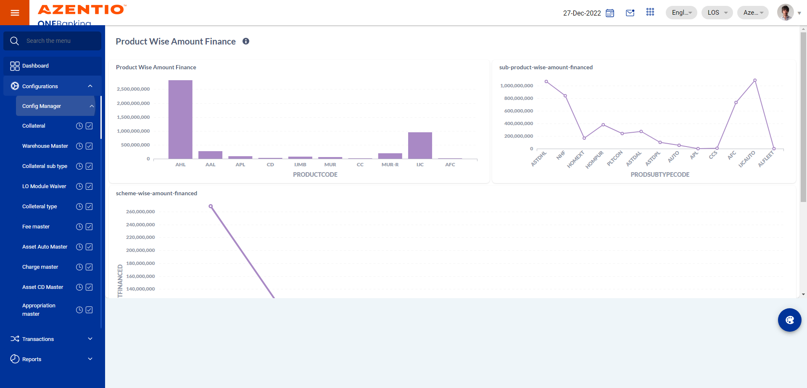And click on view button neqar by report master modulestepdefinitions.HooksClass.addScreenshot(io.cucumber.java.Scenario)screenshot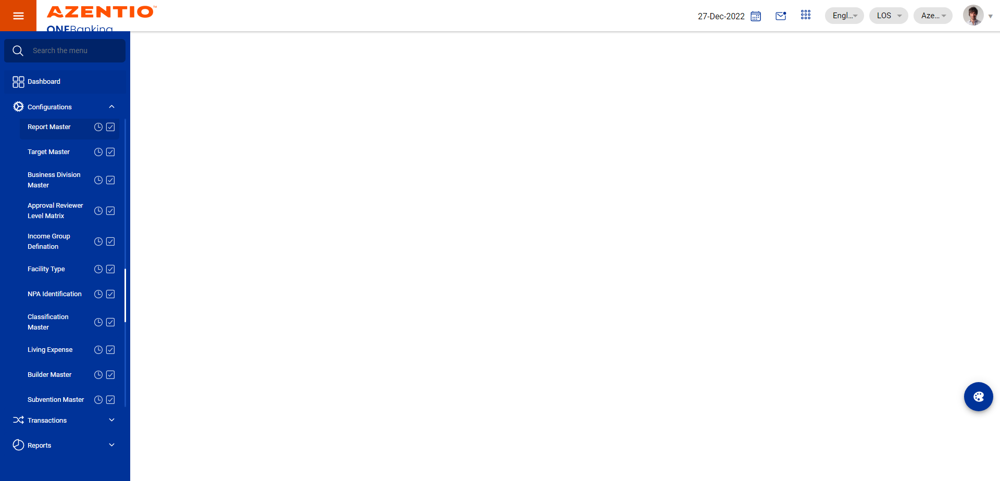And click on edit button of one of the approved recordstepdefinitions.HooksClass.addScreenshot(io.cucumber.java.Scenario)screenshot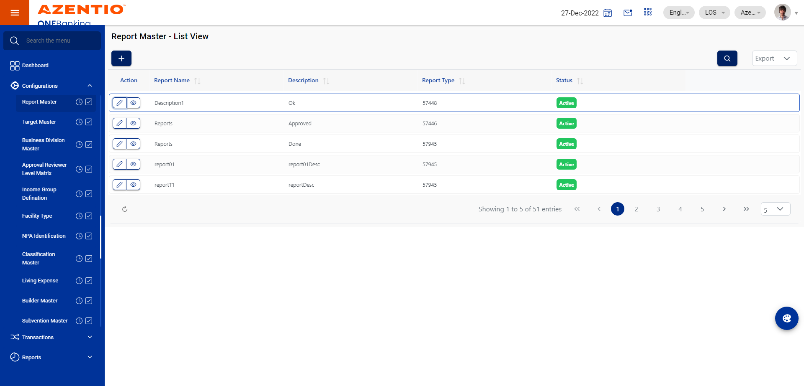And clear the input data of Report Name fieldstepdefinitions.HooksClass.addScreenshot(io.cucumber.java.Scenario)screenshotAnd get the test data o report master tenth test casestepdefinitions.HooksClass.addScreenshot(io.cucumber.java.Scenario)screenshot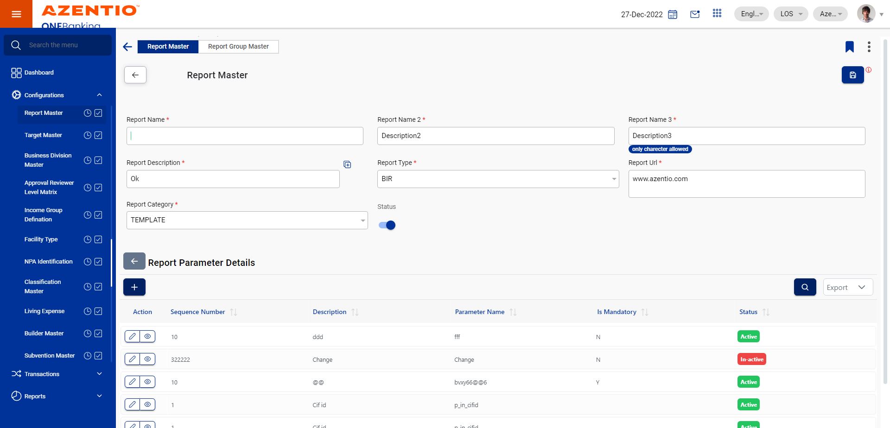And clear input data of Report Name 2 fieldstepdefinitions.HooksClass.addScreenshot(io.cucumber.java.Scenario)screenshotAnd clear the input data of Report Name 3 fieldstepdefinitions.HooksClass.addScreenshot(io.cucumber.java.Scenario)screenshotAnd clear the input data of Report Description fieldstepdefinitions.HooksClass.addScreenshot(io.cucumber.java.Scenario)screenshot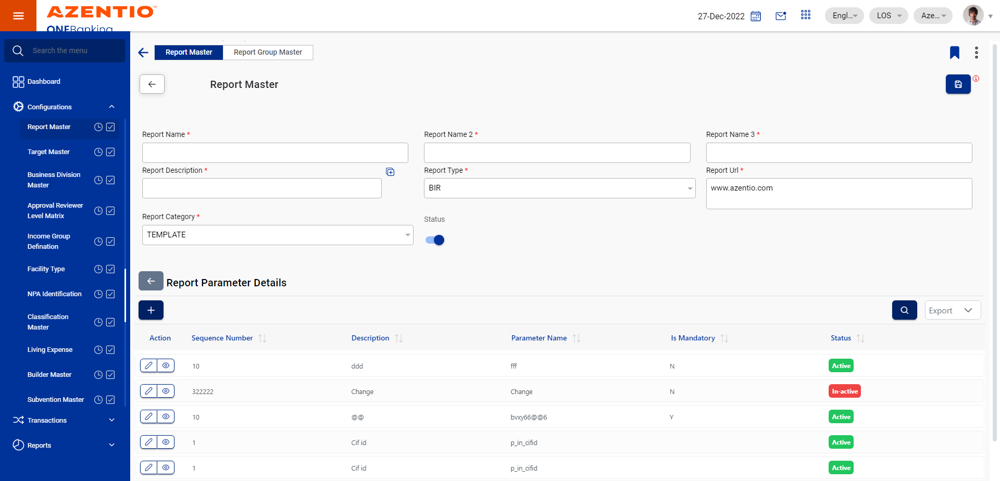And clear the input data of report type fieldstepdefinitions.HooksClass.addScreenshot(io.cucumber.java.Scenario)screenshotAnd clear the input data of Report URL fieldstepdefinitions.HooksClass.addScreenshot(io.cucumber.java.Scenario)screenshot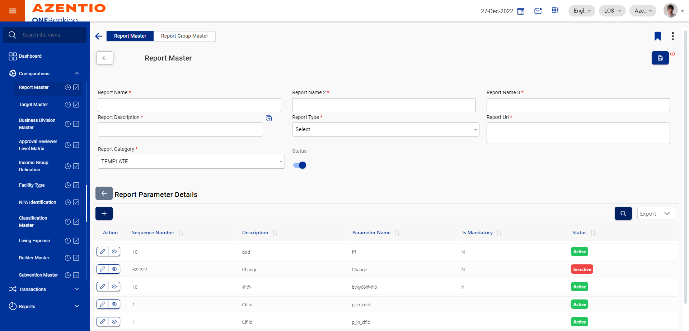And clear the input data of Report category fieldstepdefinitions.HooksClass.addScreenshot(io.cucumber.java.Scenario)screenshotAnd click on save button to save the report master screen without datastepdefinitions.HooksClass.addScreenshot(io.cucumber.java.Scenario)screenshotThen verify all the mandatory field should show the validation for blank fieldstepdefinitions.HooksClass.addScreenshot(io.cucumber.java.Scenario)screenshotThen verify report name field should through the validation message post enter the special character inputstepdefinitions.HooksClass.addScreenshot(io.cucumber.java.Scenario)screenshot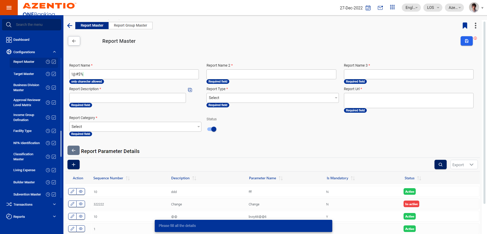Then verify report name 2 field should through the validation message post enter the special character inputstepdefinitions.HooksClass.addScreenshot(io.cucumber.java.Scenario)screenshotThen verify report name 3 field should through the validation message post enter the special character inputStep skippedThen verify report Description field should through the validation message post enter the special character inputStep skippedPassTo verify the Report Parameter DetailList view of Approved records in report masterGiven Navigate to ULS application URLstepdefinitions.HooksClass.addScreenshot(io.cucumber.java.Scenario)screenshot
Then login with valid maker credentialsstepdefinitions.HooksClass.addScreenshot(io.cucumber.java.Scenario)screenshotAnd go to configuration main menustepdefinitions.HooksClass.addScreenshot(io.cucumber.java.Scenario)screenshotAnd click on config Manager main modulestepdefinitions.HooksClass.addScreenshot(io.cucumber.java.Scenario)screenshot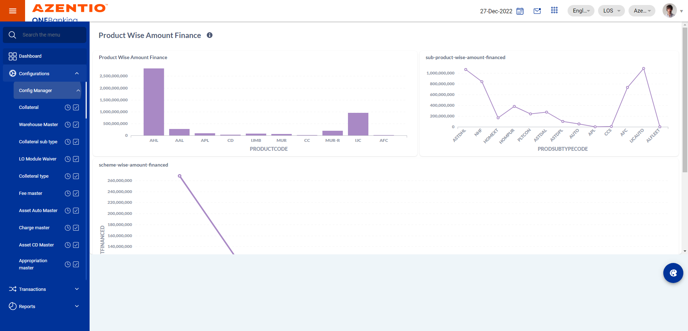And click on view button neqar by report master modulestepdefinitions.HooksClass.addScreenshot(io.cucumber.java.Scenario)screenshot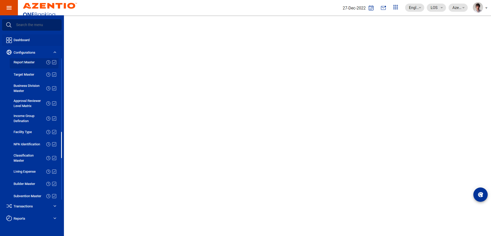And click on edit button of one of the approved recordstepdefinitions.HooksClass.addScreenshot(io.cucumber.java.Scenario)screenshot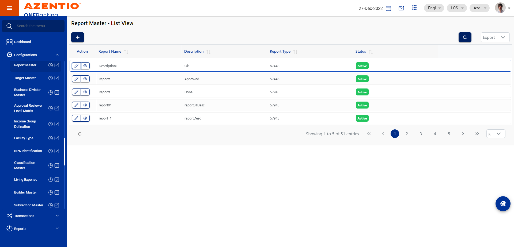And clear the input data of Report Name fieldstepdefinitions.HooksClass.addScreenshot(io.cucumber.java.Scenario)screenshotAnd get the test data o report master tenth test casestepdefinitions.HooksClass.addScreenshot(io.cucumber.java.Scenario)screenshot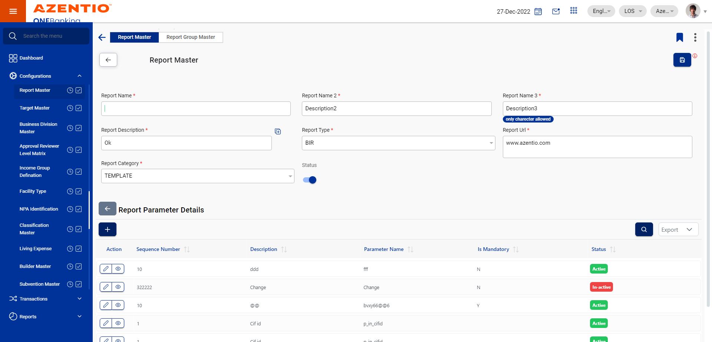And clear input data of Report Name 2 fieldstepdefinitions.HooksClass.addScreenshot(io.cucumber.java.Scenario)screenshotAnd clear the input data of Report Name 3 fieldstepdefinitions.HooksClass.addScreenshot(io.cucumber.java.Scenario)screenshotAnd clear the input data of Report Description fieldstepdefinitions.HooksClass.addScreenshot(io.cucumber.java.Scenario)screenshot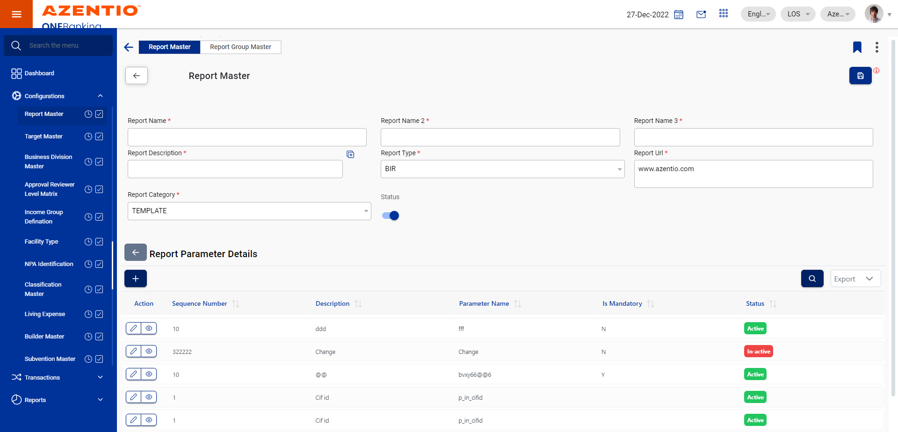And clear the input data of report type fieldstepdefinitions.HooksClass.addScreenshot(io.cucumber.java.Scenario)screenshotAnd clear the input data of Report URL fieldstepdefinitions.HooksClass.addScreenshot(io.cucumber.java.Scenario)screenshot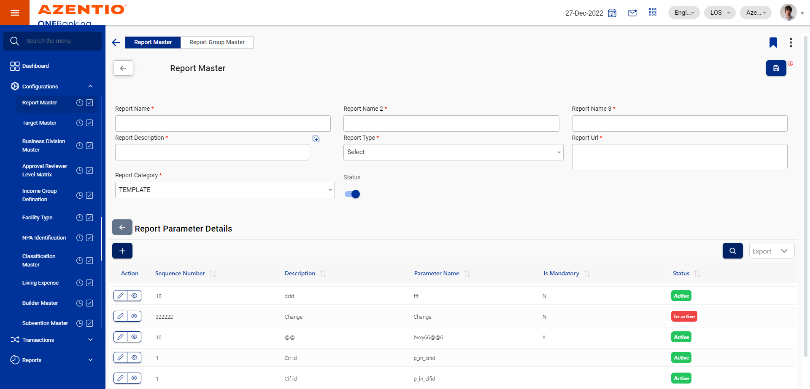And clear the input data of Report category fieldstepdefinitions.HooksClass.addScreenshot(io.cucumber.java.Scenario)screenshotAnd click on save button to save the report master screen without datastepdefinitions.HooksClass.addScreenshot(io.cucumber.java.Scenario)screenshotThen verify all the mandatory field should show the validation for blank fieldstepdefinitions.HooksClass.addScreenshot(io.cucumber.java.Scenario)screenshotThen verify report name field should through the validation message post enter the special character inputstepdefinitions.HooksClass.addScreenshot(io.cucumber.java.Scenario)screenshot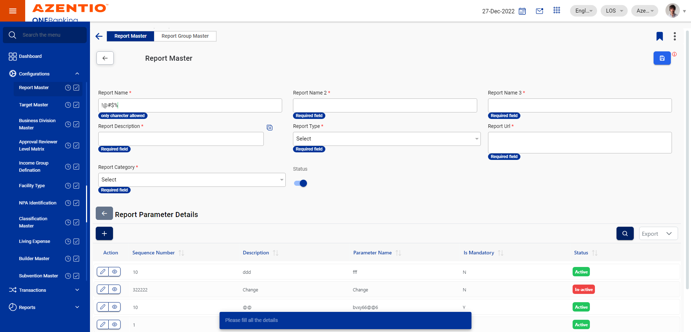Then verify report name 2 field should through the validation message post enter the special character inputstepdefinitions.HooksClass.addScreenshot(io.cucumber.java.Scenario)screenshotThen verify report name 3 field should through the validation message post enter the special character inputStep skippedThen verify report Description field should through the validation message post enter the special character inputStep skippedPassTo verify the Report Parameter DetailList view of Approved records in report masterGiven Navigate to ULS application URLstepdefinitions.HooksClass.addScreenshot(io.cucumber.java.Scenario)screenshot Then login with valid maker credentialsstepdefinitions.HooksClass.addScreenshot(io.cucumber.java.Scenario)screenshot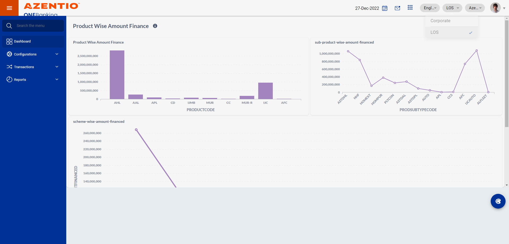And go to configuration main menustepdefinitions.HooksClass.addScreenshot(io.cucumber.java.Scenario)screenshotAnd click on config Manager main modulestepdefinitions.HooksClass.addScreenshot(io.cucumber.java.Scenario)screenshotThen choose the data set id for for list view validationstepdefinitions.HooksClass.addScreenshot(io.cucumber.java.Scenario)screenshotAnd Click the Eye icon of report masterstepdefinitions.HooksClass.addScreenshot(io.cucumber.java.Scenario)screenshot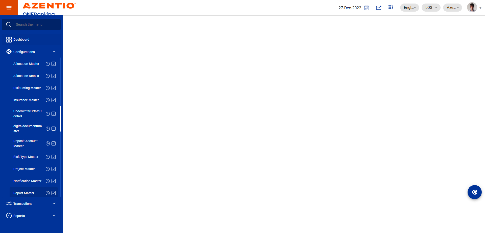Then Click the first icon in the list view in the report masterstepdefinitions.HooksClass.addScreenshot(io.cucumber.java.Scenario)screenshotAnd To verify the functionality of Add button in report masterstepdefinitions.HooksClass.addScreenshot(io.cucumber.java.Scenario)screenshot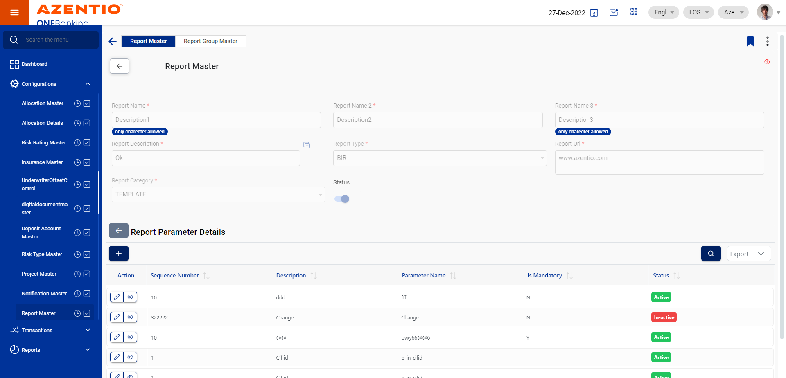Then To verify the functionality of Search box with matching data in report masterstepdefinitions.HooksClass.addScreenshot(io.cucumber.java.Scenario)screenshot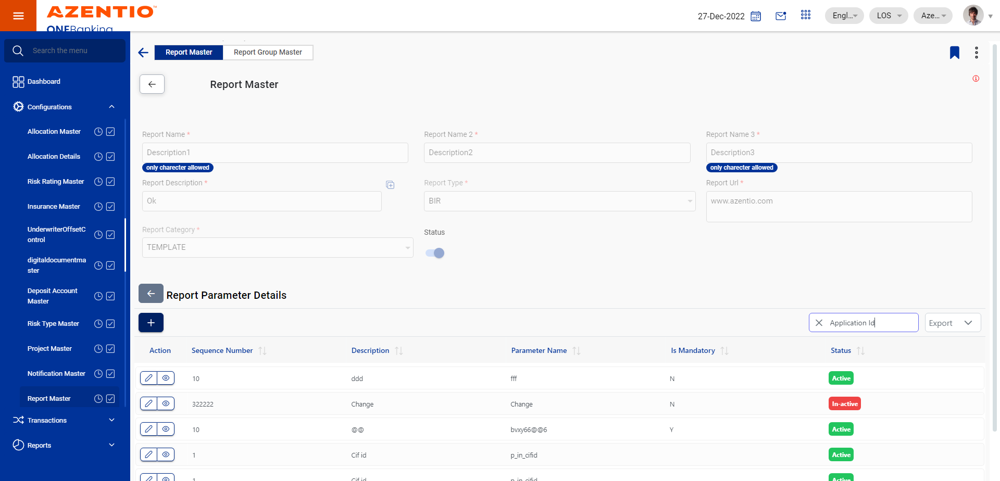And To verify the functionality of Search box with mismatch data in report masterstepdefinitions.HooksClass.addScreenshot(io.cucumber.java.Scenario)screenshot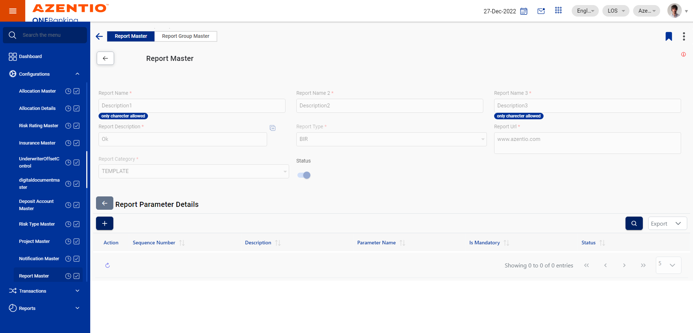Then To verify the functionality of Export to PDF button in report masterstepdefinitions.HooksClass.addScreenshot(io.cucumber.java.Scenario)screenshot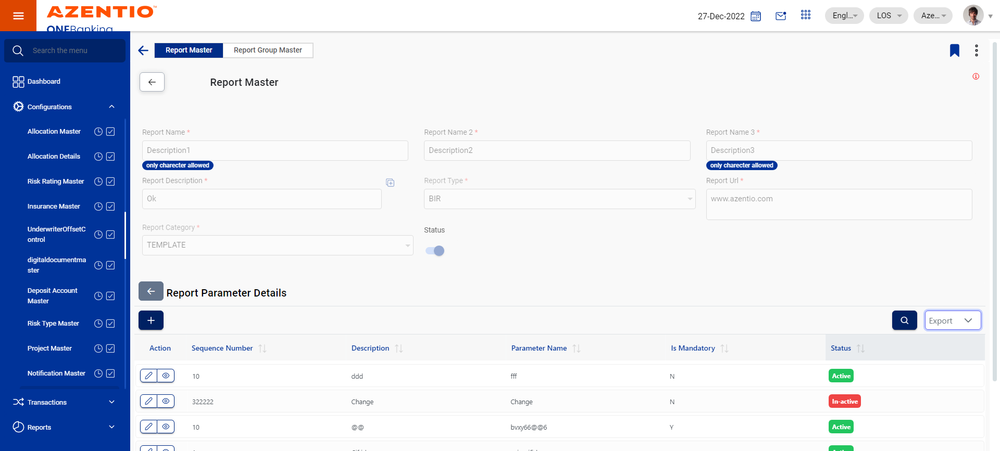And To verify the functionality of Export to Excel button in report masterstepdefinitions.HooksClass.addScreenshot(io.cucumber.java.Scenario)screenshot
Then login with valid maker credentialsstepdefinitions.HooksClass.addScreenshot(io.cucumber.java.Scenario)screenshot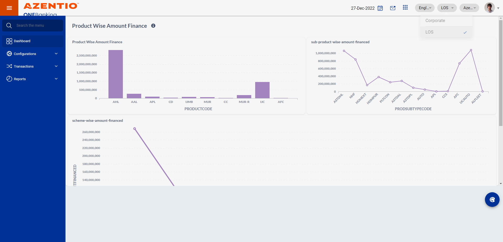And go to configuration main menustepdefinitions.HooksClass.addScreenshot(io.cucumber.java.Scenario)screenshotAnd click on config Manager main modulestepdefinitions.HooksClass.addScreenshot(io.cucumber.java.Scenario)screenshotThen choose the data set id for for list view validationstepdefinitions.HooksClass.addScreenshot(io.cucumber.java.Scenario)screenshotAnd Click the Eye icon of report masterstepdefinitions.HooksClass.addScreenshot(io.cucumber.java.Scenario)screenshot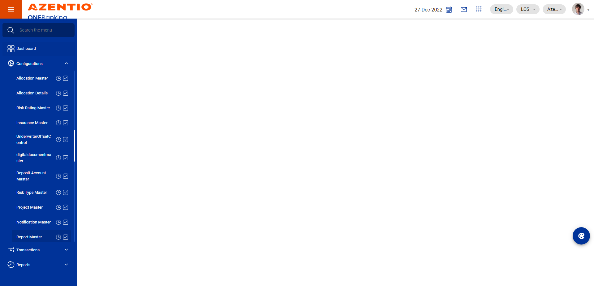Then Click the first icon in the list view in the report masterstepdefinitions.HooksClass.addScreenshot(io.cucumber.java.Scenario)screenshotAnd To verify the functionality of Add button in report masterstepdefinitions.HooksClass.addScreenshot(io.cucumber.java.Scenario)screenshot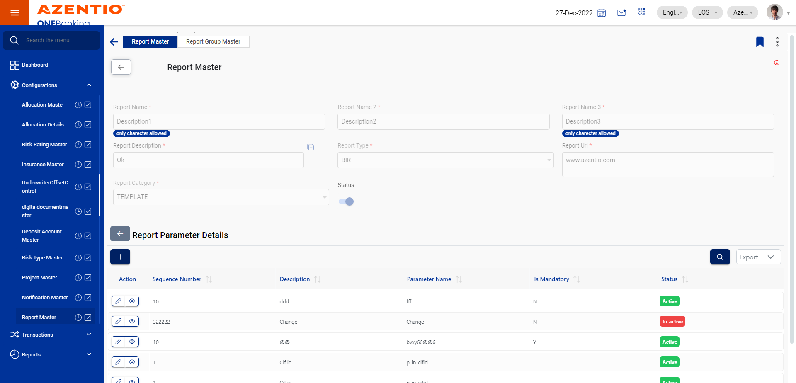Then To verify the functionality of Search box with matching data in report masterstepdefinitions.HooksClass.addScreenshot(io.cucumber.java.Scenario)screenshot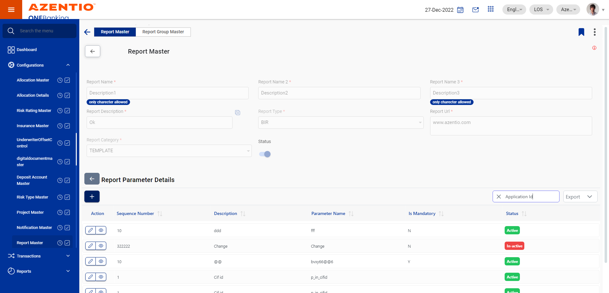And To verify the functionality of Search box with mismatch data in report masterstepdefinitions.HooksClass.addScreenshot(io.cucumber.java.Scenario)screenshot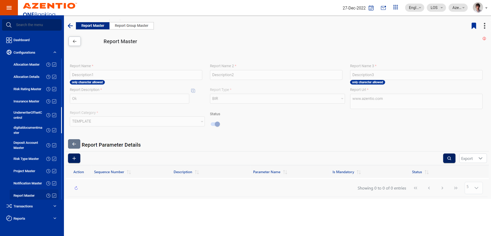Then To verify the functionality of Export to PDF button in report masterstepdefinitions.HooksClass.addScreenshot(io.cucumber.java.Scenario)screenshot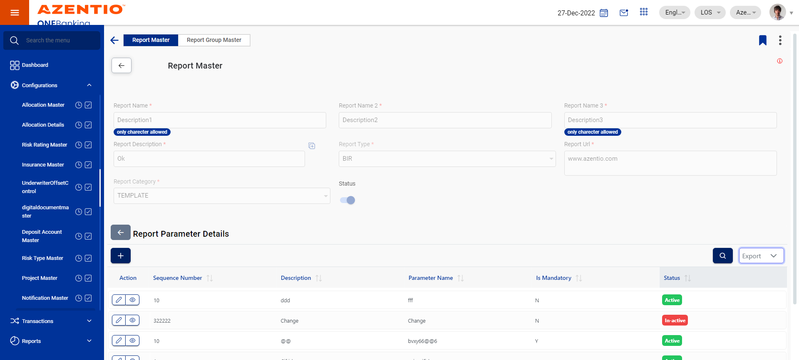And To verify the functionality of Export to Excel button in report masterstepdefinitions.HooksClass.addScreenshot(io.cucumber.java.Scenario)screenshot Then To verify the functionality of Sequence number field in report masterstepdefinitions.HooksClass.addScreenshot(io.cucumber.java.Scenario)screenshot
Then To verify the functionality of Sequence number field in report masterstepdefinitions.HooksClass.addScreenshot(io.cucumber.java.Scenario)screenshot And To verify the functionality of Description field in report masterstepdefinitions.HooksClass.addScreenshot(io.cucumber.java.Scenario)screenshot
And To verify the functionality of Description field in report masterstepdefinitions.HooksClass.addScreenshot(io.cucumber.java.Scenario)screenshot Then To verify the functionality of Status field in report masterstepdefinitions.HooksClass.addScreenshot(io.cucumber.java.Scenario)screenshot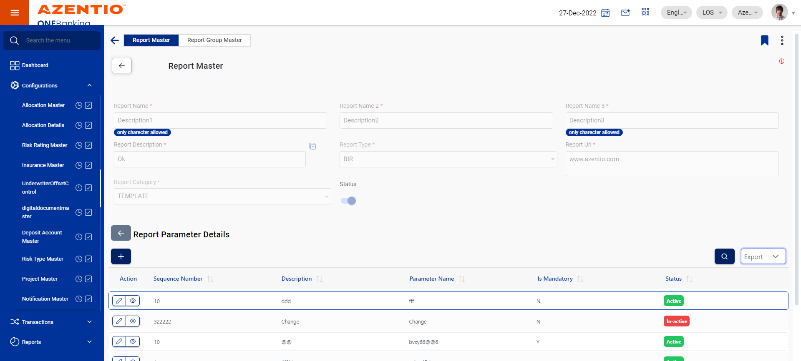FailTo verify the user can able to create the report parameterGiven Navigate to ULS application URLstepdefinitions.HooksClass.addScreenshot(io.cucumber.java.Scenario)screenshot
Then To verify the functionality of Status field in report masterstepdefinitions.HooksClass.addScreenshot(io.cucumber.java.Scenario)screenshot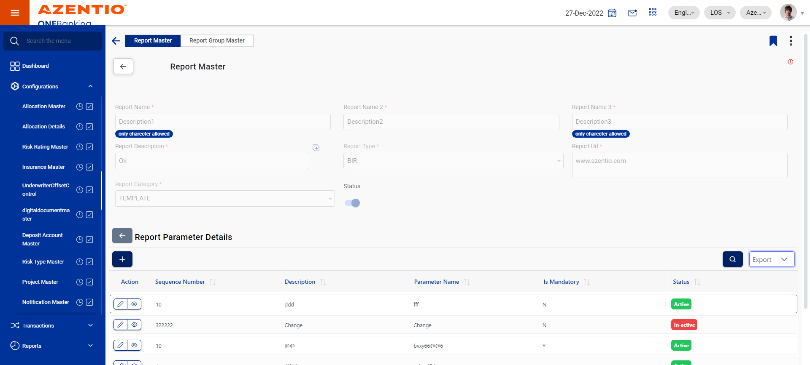FailTo verify the user can able to create the report parameterGiven Navigate to ULS application URLstepdefinitions.HooksClass.addScreenshot(io.cucumber.java.Scenario)screenshot Then login with valid maker credentialsstepdefinitions.HooksClass.addScreenshot(io.cucumber.java.Scenario)screenshotAnd go to configuration main menustepdefinitions.HooksClass.addScreenshot(io.cucumber.java.Scenario)screenshotAnd click on config Manager main modulestepdefinitions.HooksClass.addScreenshot(io.cucumber.java.Scenario)screenshotAnd User click the report master edit iconstepdefinitions.HooksClass.addScreenshot(io.cucumber.java.Scenario)screenshotThen User verify the functionality of Add button in report masterstepdefinitions.HooksClass.addScreenshot(io.cucumber.java.Scenario)screenshot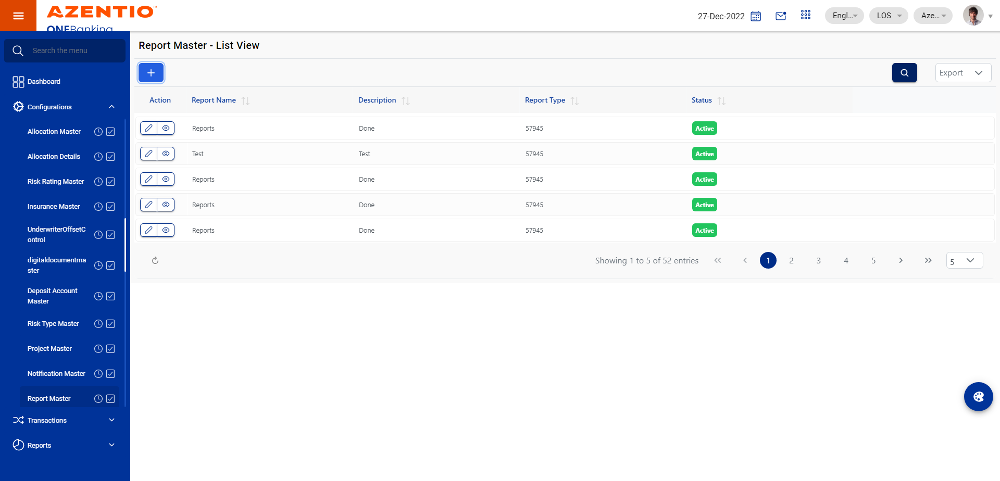And User verify the functionality of Back button in report masterstepdefinitions.HooksClass.addScreenshot(io.cucumber.java.Scenario)screenshot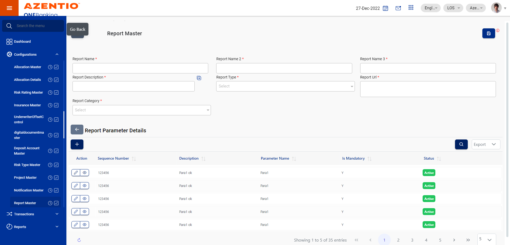Then User verify the functionality of Add button in report masterStep skippedAnd User click the report parameter add icon in report masterStep skippedAnd User Enter the Template in report parameterStep skippedAnd User Enter the parameter1 in report parameterStep skippedAnd User Enter the param1 Description1 in report parameterStep skippedAnd User Enter the param1 Description2 in report parameterStep skippedAnd User Enter the param1 Description3 in report parameterStep skippedAnd User Enter the parameter2 in report parameterStep skippedAnd User Enter the param2 Description2 in report parameterStep skippedAnd User Enter the param2 Description3 in report parameterStep skippedAnd User Enter the IsMandatory in report parameterStep skippedAnd User Enter the sequenceNo in report parameterStep skippedAnd User Enter the date format in report parameterStep skippedAnd User Enter the Nullable values in report parameterStep skippedThen User click the save icon in report masterStep skippedThen User get the confirmation message in report masterStep skippedThen User click the inboxmail icon in report masterStep skippedAnd User get the reference id in report masterStep skippedAnd User click the action edit icon in submit stage in report masterStep skippedAnd User click the submit icon in report masterStep skippedAnd User enter the popup remark and click the popup submitStep skippedAnd user get the popup message and get the checker id in report masterStep skippedFailTo verify the user can able approve the record in checker stageGiven User login as uls checker in report masterstepdefinitions.HooksClass.addScreenshot(io.cucumber.java.Scenario)screenshot
Then login with valid maker credentialsstepdefinitions.HooksClass.addScreenshot(io.cucumber.java.Scenario)screenshotAnd go to configuration main menustepdefinitions.HooksClass.addScreenshot(io.cucumber.java.Scenario)screenshotAnd click on config Manager main modulestepdefinitions.HooksClass.addScreenshot(io.cucumber.java.Scenario)screenshotAnd User click the report master edit iconstepdefinitions.HooksClass.addScreenshot(io.cucumber.java.Scenario)screenshotThen User verify the functionality of Add button in report masterstepdefinitions.HooksClass.addScreenshot(io.cucumber.java.Scenario)screenshot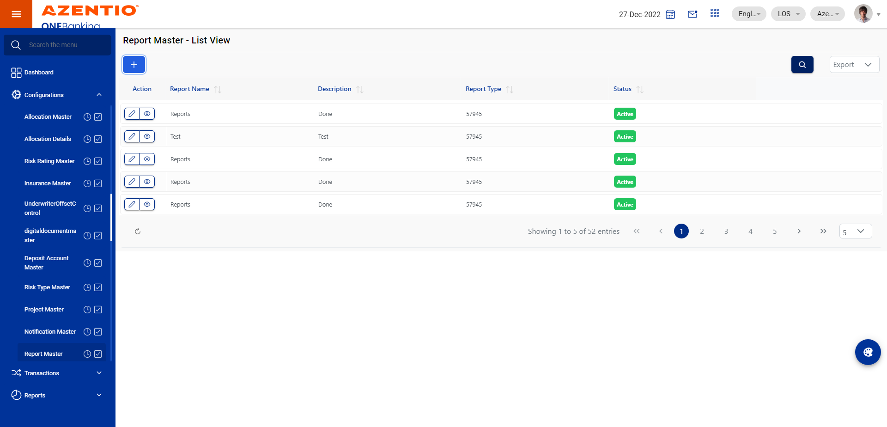And User verify the functionality of Back button in report masterstepdefinitions.HooksClass.addScreenshot(io.cucumber.java.Scenario)screenshot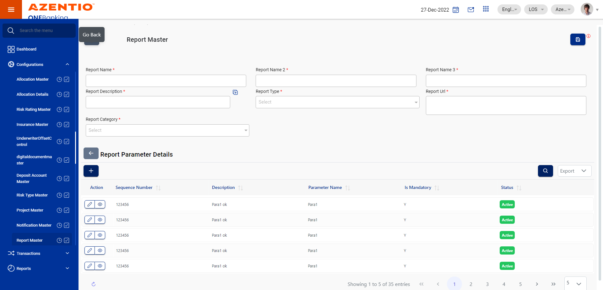Then User verify the functionality of Add button in report masterStep skippedAnd User click the report parameter add icon in report masterStep skippedAnd User Enter the Template in report parameterStep skippedAnd User Enter the parameter1 in report parameterStep skippedAnd User Enter the param1 Description1 in report parameterStep skippedAnd User Enter the param1 Description2 in report parameterStep skippedAnd User Enter the param1 Description3 in report parameterStep skippedAnd User Enter the parameter2 in report parameterStep skippedAnd User Enter the param2 Description2 in report parameterStep skippedAnd User Enter the param2 Description3 in report parameterStep skippedAnd User Enter the IsMandatory in report parameterStep skippedAnd User Enter the sequenceNo in report parameterStep skippedAnd User Enter the date format in report parameterStep skippedAnd User Enter the Nullable values in report parameterStep skippedThen User click the save icon in report masterStep skippedThen User get the confirmation message in report masterStep skippedThen User click the inboxmail icon in report masterStep skippedAnd User get the reference id in report masterStep skippedAnd User click the action edit icon in submit stage in report masterStep skippedAnd User click the submit icon in report masterStep skippedAnd User enter the popup remark and click the popup submitStep skippedAnd user get the popup message and get the checker id in report masterStep skippedFailTo verify the user can able approve the record in checker stageGiven User login as uls checker in report masterstepdefinitions.HooksClass.addScreenshot(io.cucumber.java.Scenario)screenshot And User click the inboxicon in asset CD master checkerStep skippedAnd User click the search icon in report master and get the reference id in report masterStep skippedAnd User search the respective reference id and click on Action button in report masterStep skippedAnd User click on Approve icon in asset CD master checkerStep skippedAnd User click the popup remarks in asset CD master checkerStep skippedThen User enter the popup remarks in asset CD master checkerStep skippedAnd User click the popup approve in asset CD master checkerStep skippedThen User verify the Record got Approved in asset CD checkerStep skippedPassTo verify user able to approve in checker stage and verify in maker stage for report MasterGiven Navigate to ULS application URLstepdefinitions.HooksClass.addScreenshot(io.cucumber.java.Scenario)screenshot
And User click the inboxicon in asset CD master checkerStep skippedAnd User click the search icon in report master and get the reference id in report masterStep skippedAnd User search the respective reference id and click on Action button in report masterStep skippedAnd User click on Approve icon in asset CD master checkerStep skippedAnd User click the popup remarks in asset CD master checkerStep skippedThen User enter the popup remarks in asset CD master checkerStep skippedAnd User click the popup approve in asset CD master checkerStep skippedThen User verify the Record got Approved in asset CD checkerStep skippedPassTo verify user able to approve in checker stage and verify in maker stage for report MasterGiven Navigate to ULS application URLstepdefinitions.HooksClass.addScreenshot(io.cucumber.java.Scenario)screenshot Then login with valid maker credentialsstepdefinitions.HooksClass.addScreenshot(io.cucumber.java.Scenario)screenshotAnd go to configuration main menustepdefinitions.HooksClass.addScreenshot(io.cucumber.java.Scenario)screenshotAnd click on config Manager main modulestepdefinitions.HooksClass.addScreenshot(io.cucumber.java.Scenario)screenshotAnd User click the report master eye iconstepdefinitions.HooksClass.addScreenshot(io.cucumber.java.Scenario)screenshot
Then login with valid maker credentialsstepdefinitions.HooksClass.addScreenshot(io.cucumber.java.Scenario)screenshotAnd go to configuration main menustepdefinitions.HooksClass.addScreenshot(io.cucumber.java.Scenario)screenshotAnd click on config Manager main modulestepdefinitions.HooksClass.addScreenshot(io.cucumber.java.Scenario)screenshotAnd User click the report master eye iconstepdefinitions.HooksClass.addScreenshot(io.cucumber.java.Scenario)screenshot Then User validate the updated record in list view in report masterstepdefinitions.HooksClass.addScreenshot(io.cucumber.java.Scenario)screenshot
Then User validate the updated record in list view in report masterstepdefinitions.HooksClass.addScreenshot(io.cucumber.java.Scenario)screenshot FailTo verify the user able to reject the record in Report masterGiven User login as uls checker in report masterstepdefinitions.HooksClass.addScreenshot(io.cucumber.java.Scenario)screenshot
FailTo verify the user able to reject the record in Report masterGiven User login as uls checker in report masterstepdefinitions.HooksClass.addScreenshot(io.cucumber.java.Scenario)screenshot And User click the inboxicon in asset CD master checkerStep skippedAnd User click the search icon in report master and get the reference id in report masterStep skippedAnd User search the respective reference id and click on Action button in report masterStep skippedAnd User click the reject icon in asset CD master checkerStep skippedAnd User enter the reject remark in asset CD master checkerStep skippedAnd User click the final reject icon in asset CD master checkerStep skippedThen User verify the Record got Rejected in asset CD checkerStep skippedFailTo verify the rejected record shown in report master maker stageGiven Navigate to ULS application URLstepdefinitions.HooksClass.addScreenshot(io.cucumber.java.Scenario)screenshot
And User click the inboxicon in asset CD master checkerStep skippedAnd User click the search icon in report master and get the reference id in report masterStep skippedAnd User search the respective reference id and click on Action button in report masterStep skippedAnd User click the reject icon in asset CD master checkerStep skippedAnd User enter the reject remark in asset CD master checkerStep skippedAnd User click the final reject icon in asset CD master checkerStep skippedThen User verify the Record got Rejected in asset CD checkerStep skippedFailTo verify the rejected record shown in report master maker stageGiven Navigate to ULS application URLstepdefinitions.HooksClass.addScreenshot(io.cucumber.java.Scenario)screenshot Then login with valid maker credentialsstepdefinitions.HooksClass.addScreenshot(io.cucumber.java.Scenario)screenshotAnd go to configuration main menustepdefinitions.HooksClass.addScreenshot(io.cucumber.java.Scenario)screenshot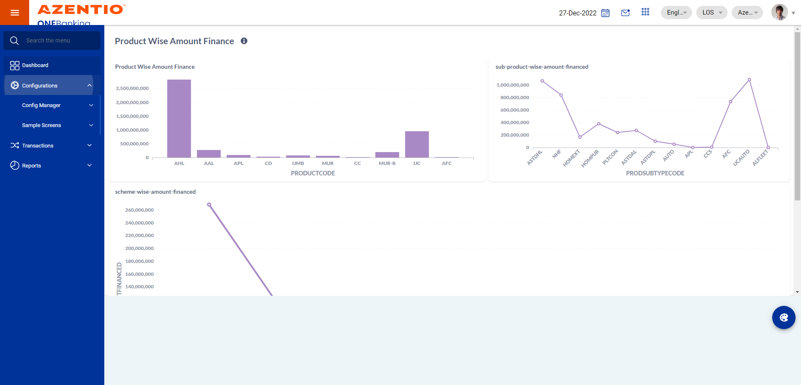And click on config Manager main modulestepdefinitions.HooksClass.addScreenshot(io.cucumber.java.Scenario)screenshot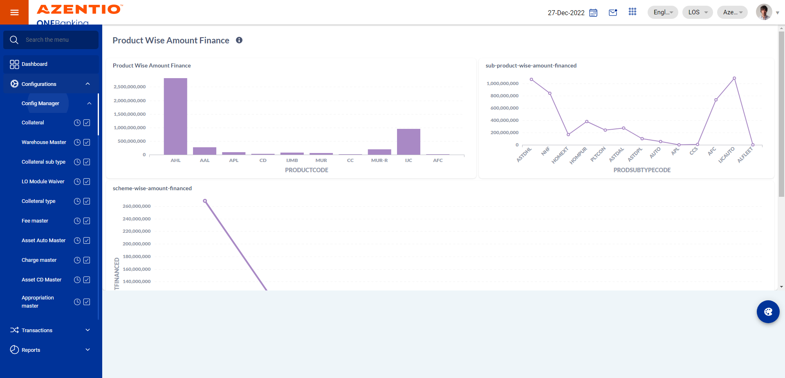And User click the report master eye iconstepdefinitions.HooksClass.addScreenshot(io.cucumber.java.Scenario)screenshotThen User click the inboxmail icon in asset CD masterstepdefinitions.HooksClass.addScreenshot(io.cucumber.java.Scenario)screenshotAnd User verify the rejected record removed from the system in report masterstepdefinitions.HooksClass.addScreenshot(io.cucumber.java.Scenario)screenshot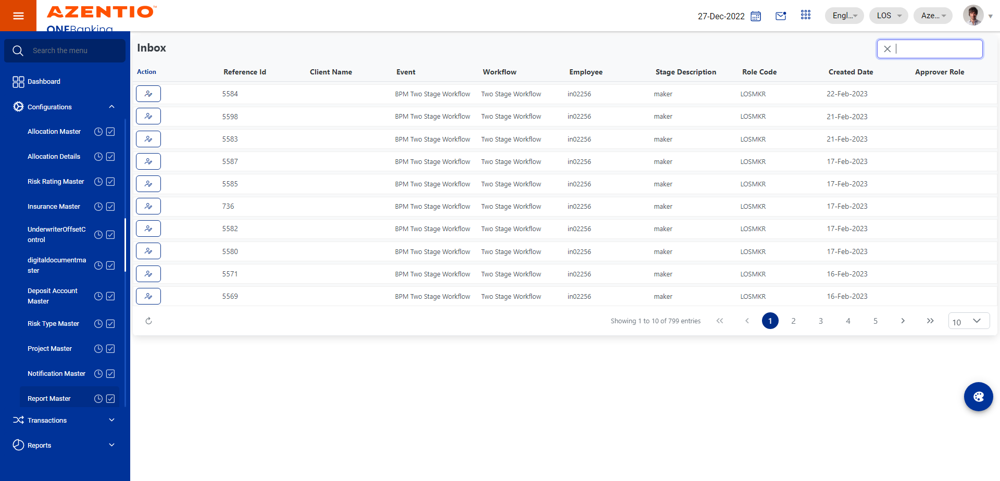FailTo verify the user able to reject the record in report masterGiven User login as uls checker in report masterstepdefinitions.HooksClass.addScreenshot(io.cucumber.java.Scenario)screenshot
Then login with valid maker credentialsstepdefinitions.HooksClass.addScreenshot(io.cucumber.java.Scenario)screenshotAnd go to configuration main menustepdefinitions.HooksClass.addScreenshot(io.cucumber.java.Scenario)screenshot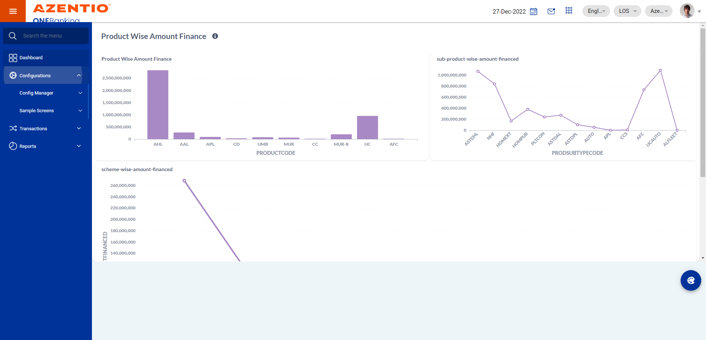And click on config Manager main modulestepdefinitions.HooksClass.addScreenshot(io.cucumber.java.Scenario)screenshot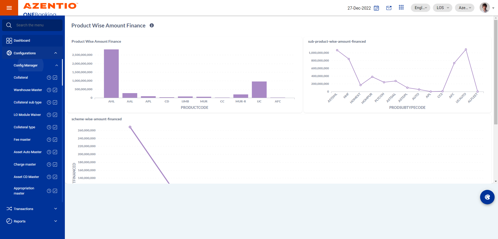And User click the report master eye iconstepdefinitions.HooksClass.addScreenshot(io.cucumber.java.Scenario)screenshotThen User click the inboxmail icon in asset CD masterstepdefinitions.HooksClass.addScreenshot(io.cucumber.java.Scenario)screenshotAnd User verify the rejected record removed from the system in report masterstepdefinitions.HooksClass.addScreenshot(io.cucumber.java.Scenario)screenshot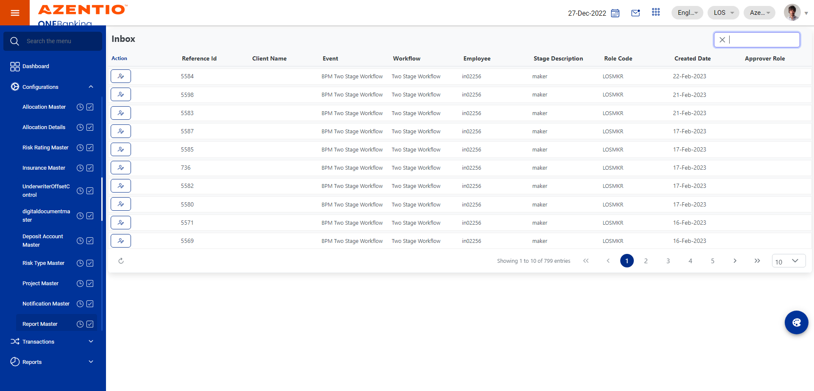FailTo verify the user able to reject the record in report masterGiven User login as uls checker in report masterstepdefinitions.HooksClass.addScreenshot(io.cucumber.java.Scenario)screenshot And User click the inboxicon in asset CD master checkerStep skippedAnd User click the search icon in report master and get the reference id in report masterStep skippedAnd User search the respective reference id and click on Action button in report masterStep skippedAnd User click the return icon in asset CD master checkerStep skippedAnd User enter the return remark in asset CD master checkerStep skippedAnd User click the final return icon in asset CD master checkerStep skippedThen User verify the Record got Returned in asset CD checkerStep skippedFailTo verify the rejected record shown in report master maker stageGiven Navigate to ULS application URLstepdefinitions.HooksClass.addScreenshot(io.cucumber.java.Scenario)screenshot
And User click the inboxicon in asset CD master checkerStep skippedAnd User click the search icon in report master and get the reference id in report masterStep skippedAnd User search the respective reference id and click on Action button in report masterStep skippedAnd User click the return icon in asset CD master checkerStep skippedAnd User enter the return remark in asset CD master checkerStep skippedAnd User click the final return icon in asset CD master checkerStep skippedThen User verify the Record got Returned in asset CD checkerStep skippedFailTo verify the rejected record shown in report master maker stageGiven Navigate to ULS application URLstepdefinitions.HooksClass.addScreenshot(io.cucumber.java.Scenario)screenshot Then login with valid maker credentialsstepdefinitions.HooksClass.addScreenshot(io.cucumber.java.Scenario)screenshotAnd go to configuration main menustepdefinitions.HooksClass.addScreenshot(io.cucumber.java.Scenario)screenshot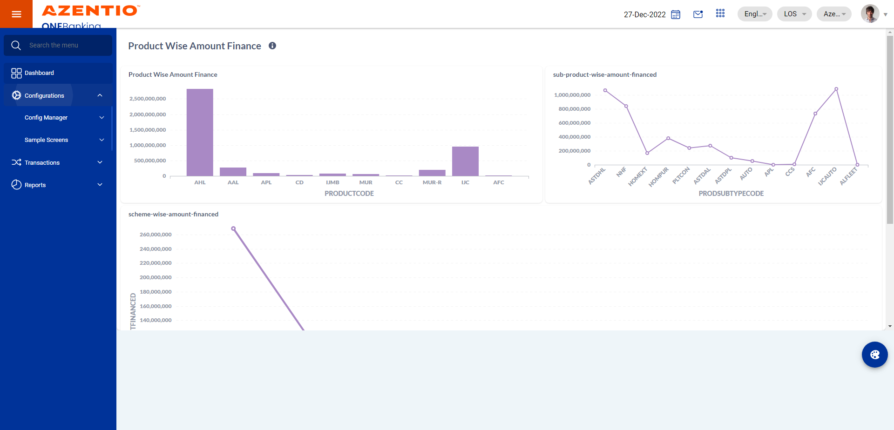And click on config Manager main modulestepdefinitions.HooksClass.addScreenshot(io.cucumber.java.Scenario)screenshot
Then login with valid maker credentialsstepdefinitions.HooksClass.addScreenshot(io.cucumber.java.Scenario)screenshotAnd go to configuration main menustepdefinitions.HooksClass.addScreenshot(io.cucumber.java.Scenario)screenshot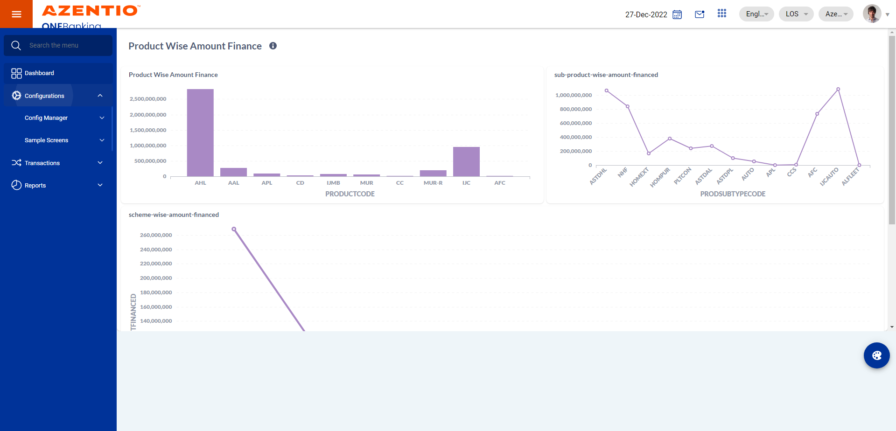And click on config Manager main modulestepdefinitions.HooksClass.addScreenshot(io.cucumber.java.Scenario)screenshot And User click the report master eye iconstepdefinitions.HooksClass.addScreenshot(io.cucumber.java.Scenario)screenshotThen User click the inboxmail icon in asset CD masterstepdefinitions.HooksClass.addScreenshot(io.cucumber.java.Scenario)screenshot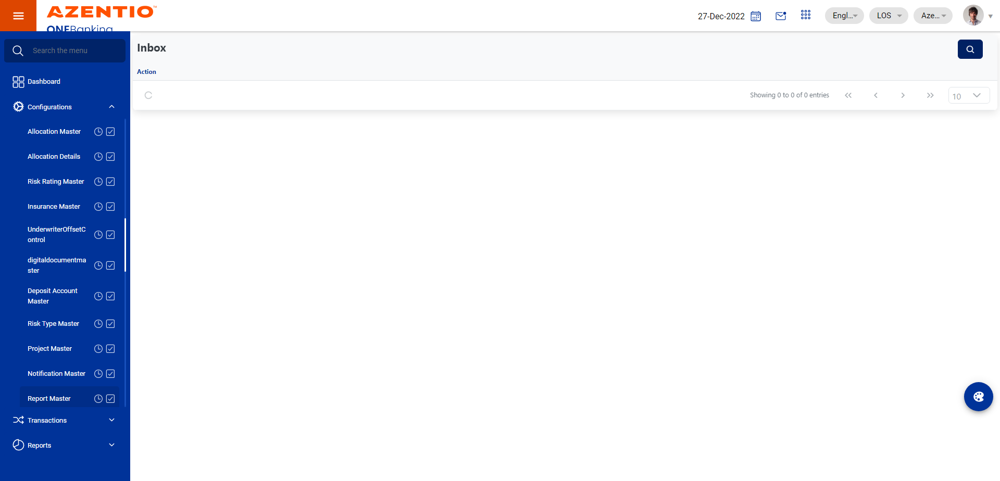And User verify the returned record removed from the system in report masterstepdefinitions.HooksClass.addScreenshot(io.cucumber.java.Scenario)screenshotFailTo verify maker user can able to create report parameter details record with invalid inputGiven Navigate to ULS application URLstepdefinitions.HooksClass.addScreenshot(io.cucumber.java.Scenario)screenshot
And User click the report master eye iconstepdefinitions.HooksClass.addScreenshot(io.cucumber.java.Scenario)screenshotThen User click the inboxmail icon in asset CD masterstepdefinitions.HooksClass.addScreenshot(io.cucumber.java.Scenario)screenshot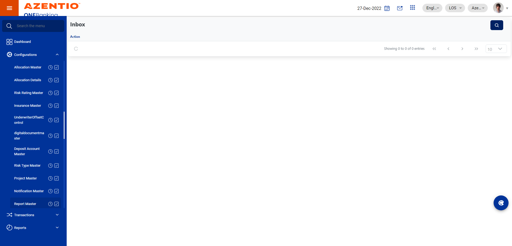And User verify the returned record removed from the system in report masterstepdefinitions.HooksClass.addScreenshot(io.cucumber.java.Scenario)screenshotFailTo verify maker user can able to create report parameter details record with invalid inputGiven Navigate to ULS application URLstepdefinitions.HooksClass.addScreenshot(io.cucumber.java.Scenario)screenshot Then login with valid maker credentialsstepdefinitions.HooksClass.addScreenshot(io.cucumber.java.Scenario)screenshot
Then login with valid maker credentialsstepdefinitions.HooksClass.addScreenshot(io.cucumber.java.Scenario)screenshot And go to configuration main menustepdefinitions.HooksClass.addScreenshot(io.cucumber.java.Scenario)screenshotAnd click on config Manager main modulestepdefinitions.HooksClass.addScreenshot(io.cucumber.java.Scenario)screenshotAnd click on view button neqar by report master modulestepdefinitions.HooksClass.addScreenshot(io.cucumber.java.Scenario)screenshot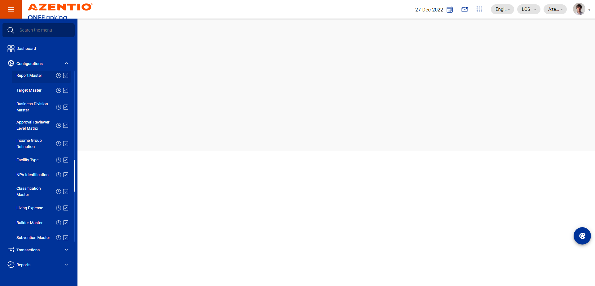And click on add button in report masterstepdefinitions.HooksClass.addScreenshot(io.cucumber.java.Scenario)screenshotAnd click on add button in report parameter detailsstepdefinitions.HooksClass.addScreenshot(io.cucumber.java.Scenario)screenshot
And go to configuration main menustepdefinitions.HooksClass.addScreenshot(io.cucumber.java.Scenario)screenshotAnd click on config Manager main modulestepdefinitions.HooksClass.addScreenshot(io.cucumber.java.Scenario)screenshotAnd click on view button neqar by report master modulestepdefinitions.HooksClass.addScreenshot(io.cucumber.java.Scenario)screenshot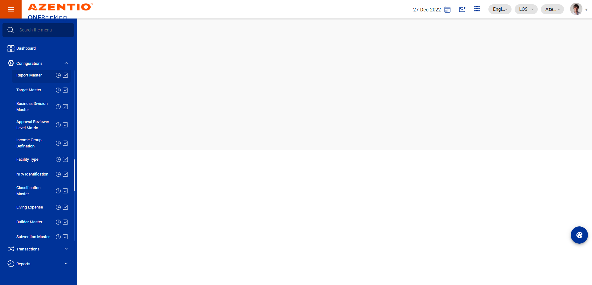And click on add button in report masterstepdefinitions.HooksClass.addScreenshot(io.cucumber.java.Scenario)screenshotAnd click on add button in report parameter detailsstepdefinitions.HooksClass.addScreenshot(io.cucumber.java.Scenario)screenshot And get the test data of parameter details validation scenario from excelstepdefinitions.HooksClass.addScreenshot(io.cucumber.java.Scenario)screenshot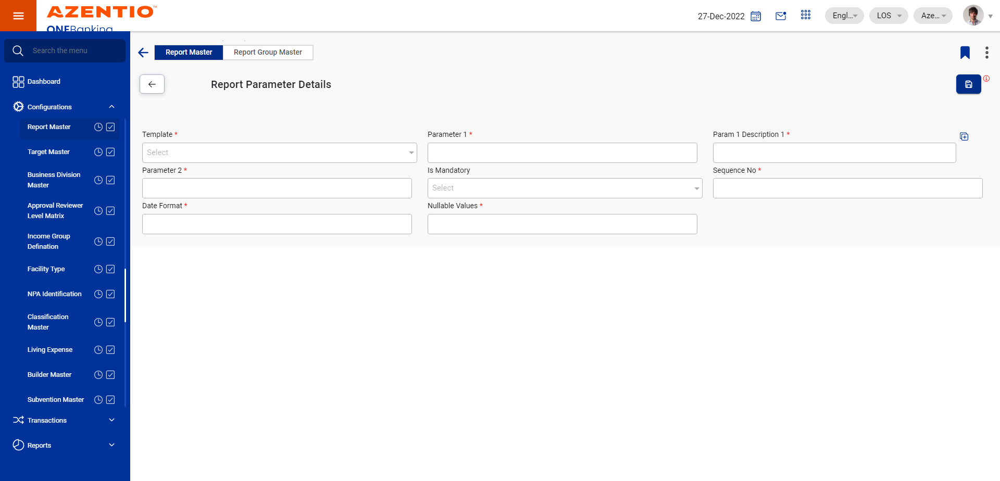And click on save button in report parameter details without filling the mendaory detailsstepdefinitions.HooksClass.addScreenshot(io.cucumber.java.Scenario)screenshot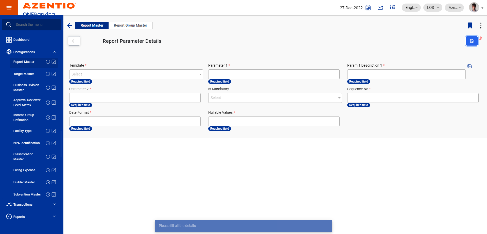Then verify user can get the validation for incomplete data in mendatory field in report parameter detailsstepdefinitions.HooksClass.addScreenshot(io.cucumber.java.Scenario)screenshot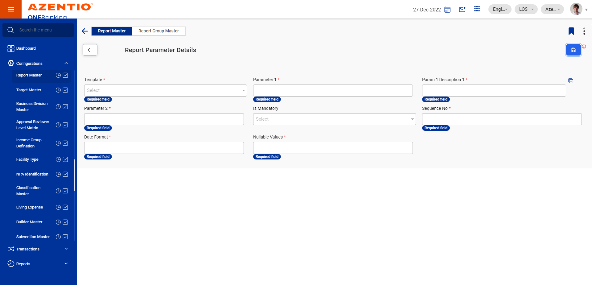And enter characters in numeric field in report parameter detailsStep skippedThen verify system should not allow to enter the charecter data into the numeric input boxStep skippedAnd enter special charecter inputs in report parameter detailsStep skippedThen verify system should through the validation for the special charecter inputs for special charecterStep skippedAnd click on template field and select the data from the drop downStep skippedAnd click on is mendatory dropdown and select the value from the dropdownStep skippedFailTo verify the user can able approve the record in checker stageGiven User login as uls checker in report masterstepdefinitions.HooksClass.addScreenshot(io.cucumber.java.Scenario)screenshot
And get the test data of parameter details validation scenario from excelstepdefinitions.HooksClass.addScreenshot(io.cucumber.java.Scenario)screenshot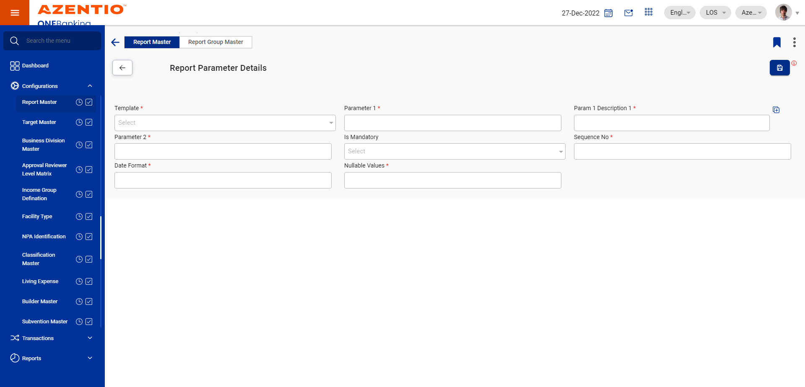And click on save button in report parameter details without filling the mendaory detailsstepdefinitions.HooksClass.addScreenshot(io.cucumber.java.Scenario)screenshot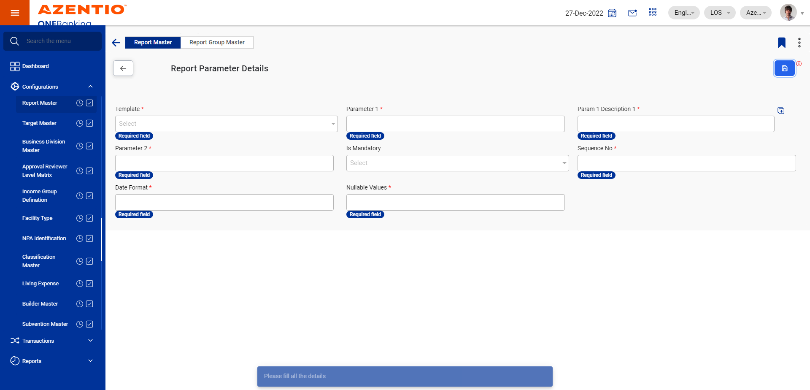Then verify user can get the validation for incomplete data in mendatory field in report parameter detailsstepdefinitions.HooksClass.addScreenshot(io.cucumber.java.Scenario)screenshot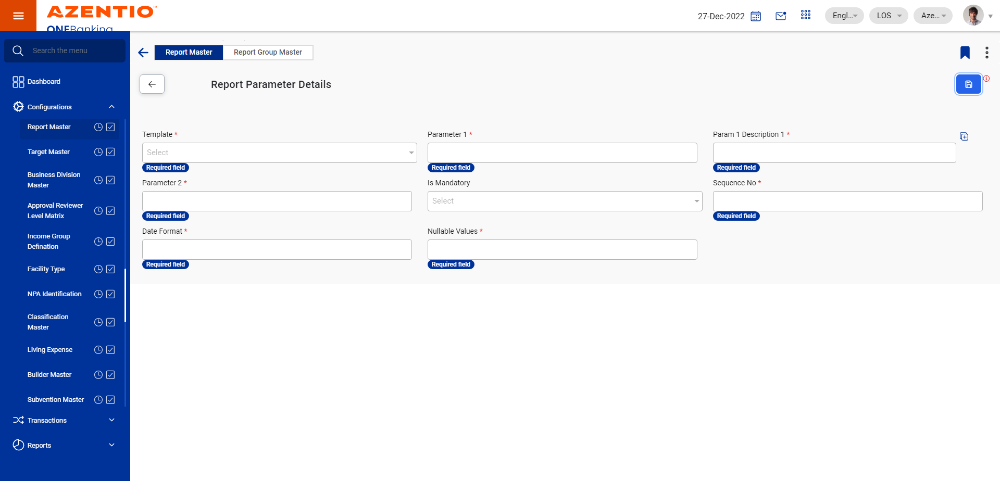And enter characters in numeric field in report parameter detailsStep skippedThen verify system should not allow to enter the charecter data into the numeric input boxStep skippedAnd enter special charecter inputs in report parameter detailsStep skippedThen verify system should through the validation for the special charecter inputs for special charecterStep skippedAnd click on template field and select the data from the drop downStep skippedAnd click on is mendatory dropdown and select the value from the dropdownStep skippedFailTo verify the user can able approve the record in checker stageGiven User login as uls checker in report masterstepdefinitions.HooksClass.addScreenshot(io.cucumber.java.Scenario)screenshot And User click the inboxicon in asset CD master checkerStep skippedAnd User click the search icon in report master and get the reference id in report masterStep skippedAnd User search the respective reference id and click on Action button in report masterStep skippedAnd User click on Approve icon in asset CD master checkerStep skippedAnd User click the popup remarks in asset CD master checkerStep skippedThen User enter the popup remarks in asset CD master checkerStep skippedAnd User click the popup approve in asset CD master checkerStep skippedThen User verify the Record got Approved in asset CD checkerStep skippedFailTo verify the user able to reject the record in Report masterGiven User login as uls checker in report masterstepdefinitions.HooksClass.addScreenshot(io.cucumber.java.Scenario)screenshot
And User click the inboxicon in asset CD master checkerStep skippedAnd User click the search icon in report master and get the reference id in report masterStep skippedAnd User search the respective reference id and click on Action button in report masterStep skippedAnd User click on Approve icon in asset CD master checkerStep skippedAnd User click the popup remarks in asset CD master checkerStep skippedThen User enter the popup remarks in asset CD master checkerStep skippedAnd User click the popup approve in asset CD master checkerStep skippedThen User verify the Record got Approved in asset CD checkerStep skippedFailTo verify the user able to reject the record in Report masterGiven User login as uls checker in report masterstepdefinitions.HooksClass.addScreenshot(io.cucumber.java.Scenario)screenshot And User click the inboxicon in asset CD master checkerStep skippedAnd User click the search icon in report master and get the reference id in report masterStep skippedAnd User search the respective reference id and click on Action button in report masterStep skippedAnd User click the reject icon in asset CD master checkerStep skippedAnd User enter the reject remark in asset CD master checkerStep skippedAnd User click the final reject icon in asset CD master checkerStep skippedThen User verify the Record got Rejected in asset CD checkerStep skippedFailTo verify the user able to reject the record in report masterGiven User login as uls checker in report masterstepdefinitions.HooksClass.addScreenshot(io.cucumber.java.Scenario)screenshot
And User click the inboxicon in asset CD master checkerStep skippedAnd User click the search icon in report master and get the reference id in report masterStep skippedAnd User search the respective reference id and click on Action button in report masterStep skippedAnd User click the reject icon in asset CD master checkerStep skippedAnd User enter the reject remark in asset CD master checkerStep skippedAnd User click the final reject icon in asset CD master checkerStep skippedThen User verify the Record got Rejected in asset CD checkerStep skippedFailTo verify the user able to reject the record in report masterGiven User login as uls checker in report masterstepdefinitions.HooksClass.addScreenshot(io.cucumber.java.Scenario)screenshot And User click the inboxicon in asset CD master checkerStep skippedAnd User click the search icon in report master and get the reference id in report masterStep skippedAnd User search the respective reference id and click on Action button in report masterStep skippedAnd User click the return icon in asset CD master checkerStep skippedAnd User enter the return remark in asset CD master checkerStep skippedAnd User click the final return icon in asset CD master checkerStep skippedThen User verify the Record got Returned in asset CD checkerStep skippedFailTo verify the functionality of the report masterGiven Navigate to ULS application URLstepdefinitions.HooksClass.addScreenshot(io.cucumber.java.Scenario)screenshot
And User click the inboxicon in asset CD master checkerStep skippedAnd User click the search icon in report master and get the reference id in report masterStep skippedAnd User search the respective reference id and click on Action button in report masterStep skippedAnd User click the return icon in asset CD master checkerStep skippedAnd User enter the return remark in asset CD master checkerStep skippedAnd User click the final return icon in asset CD master checkerStep skippedThen User verify the Record got Returned in asset CD checkerStep skippedFailTo verify the functionality of the report masterGiven Navigate to ULS application URLstepdefinitions.HooksClass.addScreenshot(io.cucumber.java.Scenario)screenshot Then login with valid maker credentialsstepdefinitions.HooksClass.addScreenshot(io.cucumber.java.Scenario)screenshotAnd go to configuration main menustepdefinitions.HooksClass.addScreenshot(io.cucumber.java.Scenario)screenshotAnd click on config Manager main modulestepdefinitions.HooksClass.addScreenshot(io.cucumber.java.Scenario)screenshotThen User click the report master list view iconstepdefinitions.HooksClass.addScreenshot(io.cucumber.java.Scenario)screenshotThen User verify the functionality of Add button in report masterstepdefinitions.HooksClass.addScreenshot(io.cucumber.java.Scenario)screenshot
Then login with valid maker credentialsstepdefinitions.HooksClass.addScreenshot(io.cucumber.java.Scenario)screenshotAnd go to configuration main menustepdefinitions.HooksClass.addScreenshot(io.cucumber.java.Scenario)screenshotAnd click on config Manager main modulestepdefinitions.HooksClass.addScreenshot(io.cucumber.java.Scenario)screenshotThen User click the report master list view iconstepdefinitions.HooksClass.addScreenshot(io.cucumber.java.Scenario)screenshotThen User verify the functionality of Add button in report masterstepdefinitions.HooksClass.addScreenshot(io.cucumber.java.Scenario)screenshot And User verify the functionality of Back button in report masterstepdefinitions.HooksClass.addScreenshot(io.cucumber.java.Scenario)screenshot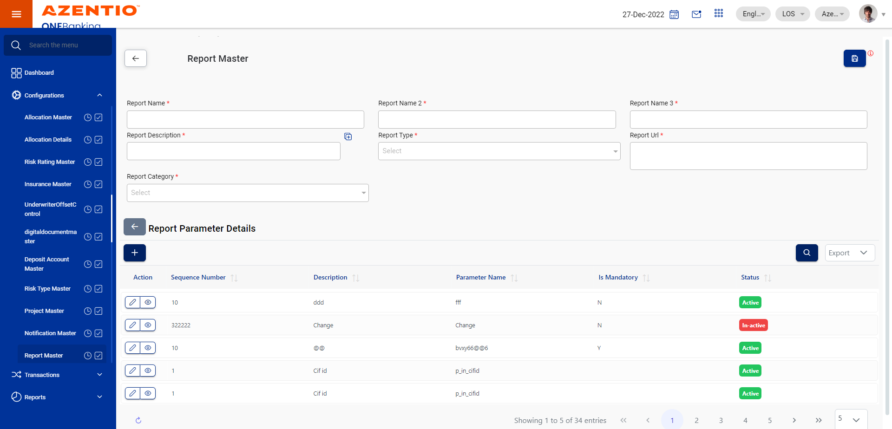Then User verify the functionality of Add button in report masterStep skippedAnd User click the report parameter add icon in report masterStep skippedAnd User click the report group master icon in report masterStep skippedAnd User click the report group master add icon in report masterStep skippedAnd User Enter the group name in report masterStep skippedAnd User Enter the group description in report masterStep skippedAnd User Enter the min parameter required in report masterStep skippedAnd User Verify the available and selected field in report masterStep skippedThen User click the save icon in report masterStep skippedThen User get the confirmation message in report masterStep skippedThen User click the inboxmail icon in report masterStep skippedAnd User get the reference id in report masterStep skippedAnd User click the action edit icon in submit stage in report masterStep skippedAnd User click the submit icon in report masterStep skippedAnd User enter the popup remark and click the popup submitStep skippedAnd user get the popup message and get the checker id in report masterStep skippedFailTo verify user is able to add new ReportMaster record in the system by entering valid dataGiven Navigate to ULS application URLstepdefinitions.HooksClass.addScreenshot(io.cucumber.java.Scenario)screenshotThen login with valid maker credentialsstepdefinitions.HooksClass.addScreenshot(io.cucumber.java.Scenario)screenshotAnd go to configuration main menustepdefinitions.HooksClass.addScreenshot(io.cucumber.java.Scenario)screenshotAnd click on config Manager main modulestepdefinitions.HooksClass.addScreenshot(io.cucumber.java.Scenario)screenshotThen click on Report Master Checkboxstepdefinitions.HooksClass.addScreenshot(io.cucumber.java.Scenario)screenshotThen search Report Master Return record from view Liststepdefinitions.HooksClass.addScreenshot(io.cucumber.java.Scenario)screenshotThen click on Report Group Master segment buttonStep skippedThen click on Report Group Master AddButtonStep skippedThen Enter Group NameStep skippedThen Enter Group DescriptionStep skippedThen Enter Min Required ParameterStep skippedThen save Report Group Master RecordStep skippedThen validate Success pop upStep skippedThen click on inboxStep skippedThen click on inbox search iconStep skippedThen search Report Group Master recordStep skippedAnd maker user open the record from inboxStep skippedThen maker user submit the RecordStep skippedThen user logout from the applicationStep skippedGiven User login as uls checker in report masterStep skippedThen click on inboxStep skippedThen click on inbox search iconStep skippedThen search Report Group Master recordStep skippedThen checker user open the record from inboxStep skippedThen checker user approve the recordStep skippedFailTo verify user is able to reject Report Group Master recordGiven Navigate to ULS application URLstepdefinitions.HooksClass.addScreenshot(io.cucumber.java.Scenario)screenshot
And User verify the functionality of Back button in report masterstepdefinitions.HooksClass.addScreenshot(io.cucumber.java.Scenario)screenshot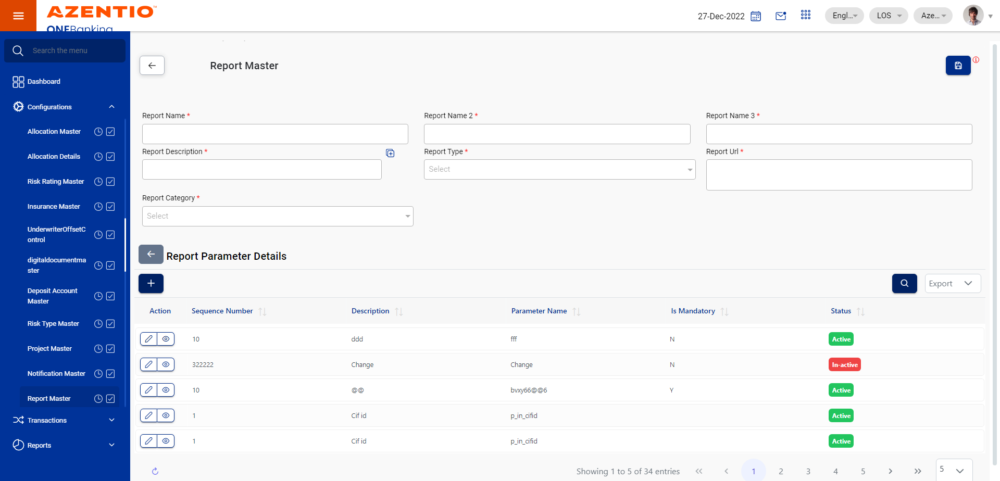Then User verify the functionality of Add button in report masterStep skippedAnd User click the report parameter add icon in report masterStep skippedAnd User click the report group master icon in report masterStep skippedAnd User click the report group master add icon in report masterStep skippedAnd User Enter the group name in report masterStep skippedAnd User Enter the group description in report masterStep skippedAnd User Enter the min parameter required in report masterStep skippedAnd User Verify the available and selected field in report masterStep skippedThen User click the save icon in report masterStep skippedThen User get the confirmation message in report masterStep skippedThen User click the inboxmail icon in report masterStep skippedAnd User get the reference id in report masterStep skippedAnd User click the action edit icon in submit stage in report masterStep skippedAnd User click the submit icon in report masterStep skippedAnd User enter the popup remark and click the popup submitStep skippedAnd user get the popup message and get the checker id in report masterStep skippedFailTo verify user is able to add new ReportMaster record in the system by entering valid dataGiven Navigate to ULS application URLstepdefinitions.HooksClass.addScreenshot(io.cucumber.java.Scenario)screenshotThen login with valid maker credentialsstepdefinitions.HooksClass.addScreenshot(io.cucumber.java.Scenario)screenshotAnd go to configuration main menustepdefinitions.HooksClass.addScreenshot(io.cucumber.java.Scenario)screenshotAnd click on config Manager main modulestepdefinitions.HooksClass.addScreenshot(io.cucumber.java.Scenario)screenshotThen click on Report Master Checkboxstepdefinitions.HooksClass.addScreenshot(io.cucumber.java.Scenario)screenshotThen search Report Master Return record from view Liststepdefinitions.HooksClass.addScreenshot(io.cucumber.java.Scenario)screenshotThen click on Report Group Master segment buttonStep skippedThen click on Report Group Master AddButtonStep skippedThen Enter Group NameStep skippedThen Enter Group DescriptionStep skippedThen Enter Min Required ParameterStep skippedThen save Report Group Master RecordStep skippedThen validate Success pop upStep skippedThen click on inboxStep skippedThen click on inbox search iconStep skippedThen search Report Group Master recordStep skippedAnd maker user open the record from inboxStep skippedThen maker user submit the RecordStep skippedThen user logout from the applicationStep skippedGiven User login as uls checker in report masterStep skippedThen click on inboxStep skippedThen click on inbox search iconStep skippedThen search Report Group Master recordStep skippedThen checker user open the record from inboxStep skippedThen checker user approve the recordStep skippedFailTo verify user is able to reject Report Group Master recordGiven Navigate to ULS application URLstepdefinitions.HooksClass.addScreenshot(io.cucumber.java.Scenario)screenshot Then login with valid maker credentialsstepdefinitions.HooksClass.addScreenshot(io.cucumber.java.Scenario)screenshot
Then login with valid maker credentialsstepdefinitions.HooksClass.addScreenshot(io.cucumber.java.Scenario)screenshot And go to configuration main menustepdefinitions.HooksClass.addScreenshot(io.cucumber.java.Scenario)screenshotAnd click on config Manager main modulestepdefinitions.HooksClass.addScreenshot(io.cucumber.java.Scenario)screenshotThen click on Report Master Checkboxstepdefinitions.HooksClass.addScreenshot(io.cucumber.java.Scenario)screenshotThen search Report Master record from view Liststepdefinitions.HooksClass.addScreenshot(io.cucumber.java.Scenario)screenshotThen click on Report Group Master segment buttonStep skippedThen click on Report Group Master AddButtonStep skippedThen Enter Group NameStep skippedThen Enter Group DescriptionStep skippedThen Enter Min Required ParameterStep skippedThen save Report Group Master RecordStep skippedThen validate Success pop upStep skippedThen click on inboxStep skippedThen click on inbox search iconStep skippedThen search Report Group Master recordStep skippedAnd maker user open the record from inboxStep skippedThen maker user submit the RecordStep skippedThen user logout from the applicationStep skippedGiven User login as uls checker in report masterStep skippedThen click on inboxStep skippedThen click on inbox search iconStep skippedThen search Report Group Master recordStep skippedThen checker user open the record from inboxStep skippedThen checker user reject the recordStep skippedFailTo verify user is able to return Report Group Master recordGiven Navigate to ULS application URLstepdefinitions.HooksClass.addScreenshot(io.cucumber.java.Scenario)screenshot
And go to configuration main menustepdefinitions.HooksClass.addScreenshot(io.cucumber.java.Scenario)screenshotAnd click on config Manager main modulestepdefinitions.HooksClass.addScreenshot(io.cucumber.java.Scenario)screenshotThen click on Report Master Checkboxstepdefinitions.HooksClass.addScreenshot(io.cucumber.java.Scenario)screenshotThen search Report Master record from view Liststepdefinitions.HooksClass.addScreenshot(io.cucumber.java.Scenario)screenshotThen click on Report Group Master segment buttonStep skippedThen click on Report Group Master AddButtonStep skippedThen Enter Group NameStep skippedThen Enter Group DescriptionStep skippedThen Enter Min Required ParameterStep skippedThen save Report Group Master RecordStep skippedThen validate Success pop upStep skippedThen click on inboxStep skippedThen click on inbox search iconStep skippedThen search Report Group Master recordStep skippedAnd maker user open the record from inboxStep skippedThen maker user submit the RecordStep skippedThen user logout from the applicationStep skippedGiven User login as uls checker in report masterStep skippedThen click on inboxStep skippedThen click on inbox search iconStep skippedThen search Report Group Master recordStep skippedThen checker user open the record from inboxStep skippedThen checker user reject the recordStep skippedFailTo verify user is able to return Report Group Master recordGiven Navigate to ULS application URLstepdefinitions.HooksClass.addScreenshot(io.cucumber.java.Scenario)screenshot Then login with valid maker credentialsstepdefinitions.HooksClass.addScreenshot(io.cucumber.java.Scenario)screenshotAnd go to configuration main menustepdefinitions.HooksClass.addScreenshot(io.cucumber.java.Scenario)screenshotAnd click on config Manager main modulestepdefinitions.HooksClass.addScreenshot(io.cucumber.java.Scenario)screenshotThen click on Report Master Checkboxstepdefinitions.HooksClass.addScreenshot(io.cucumber.java.Scenario)screenshotThen search Report Master Reject record from view Liststepdefinitions.HooksClass.addScreenshot(io.cucumber.java.Scenario)screenshot
Then login with valid maker credentialsstepdefinitions.HooksClass.addScreenshot(io.cucumber.java.Scenario)screenshotAnd go to configuration main menustepdefinitions.HooksClass.addScreenshot(io.cucumber.java.Scenario)screenshotAnd click on config Manager main modulestepdefinitions.HooksClass.addScreenshot(io.cucumber.java.Scenario)screenshotThen click on Report Master Checkboxstepdefinitions.HooksClass.addScreenshot(io.cucumber.java.Scenario)screenshotThen search Report Master Reject record from view Liststepdefinitions.HooksClass.addScreenshot(io.cucumber.java.Scenario)screenshot Then click on Report Group Master segment buttonStep skippedThen click on Report Group Master AddButtonStep skippedThen Enter Group NameStep skippedThen Enter Group DescriptionStep skippedThen Enter Min Required ParameterStep skippedThen save Report Group Master RecordStep skippedThen validate Success pop upStep skippedThen click on inboxStep skippedThen click on inbox search iconStep skippedThen search Report Group Master recordStep skippedAnd maker user open the record from inboxStep skippedThen maker user submit the RecordStep skippedThen user logout from the applicationStep skippedGiven User login as uls checker in report masterStep skippedThen click on inboxStep skippedThen click on inbox search iconStep skippedThen search Report Group Master recordStep skippedThen checker user open the record from inboxStep skippedThen checker user return the recordStep skippedFailTo verify the user can able approve the record in checker stageGiven User login as uls checker in report masterstepdefinitions.HooksClass.addScreenshot(io.cucumber.java.Scenario)screenshot
Then click on Report Group Master segment buttonStep skippedThen click on Report Group Master AddButtonStep skippedThen Enter Group NameStep skippedThen Enter Group DescriptionStep skippedThen Enter Min Required ParameterStep skippedThen save Report Group Master RecordStep skippedThen validate Success pop upStep skippedThen click on inboxStep skippedThen click on inbox search iconStep skippedThen search Report Group Master recordStep skippedAnd maker user open the record from inboxStep skippedThen maker user submit the RecordStep skippedThen user logout from the applicationStep skippedGiven User login as uls checker in report masterStep skippedThen click on inboxStep skippedThen click on inbox search iconStep skippedThen search Report Group Master recordStep skippedThen checker user open the record from inboxStep skippedThen checker user return the recordStep skippedFailTo verify the user can able approve the record in checker stageGiven User login as uls checker in report masterstepdefinitions.HooksClass.addScreenshot(io.cucumber.java.Scenario)screenshot And User click the inboxicon in asset CD master checkerStep skippedAnd User click the search icon in report master and get the reference id in report masterStep skippedAnd User search the respective reference id and click on Action button in report masterStep skippedAnd User click on Approve icon in asset CD master checkerStep skippedAnd User click the popup remarks in asset CD master checkerStep skippedThen User enter the popup remarks in asset CD master checkerStep skippedAnd User click the popup approve in asset CD master checkerStep skippedThen User verify the Record got Approved in asset CD checkerStep skippedFailTo verify the user able to reject the record in Report masterGiven User login as uls checker in report masterstepdefinitions.HooksClass.addScreenshot(io.cucumber.java.Scenario)screenshot
And User click the inboxicon in asset CD master checkerStep skippedAnd User click the search icon in report master and get the reference id in report masterStep skippedAnd User search the respective reference id and click on Action button in report masterStep skippedAnd User click on Approve icon in asset CD master checkerStep skippedAnd User click the popup remarks in asset CD master checkerStep skippedThen User enter the popup remarks in asset CD master checkerStep skippedAnd User click the popup approve in asset CD master checkerStep skippedThen User verify the Record got Approved in asset CD checkerStep skippedFailTo verify the user able to reject the record in Report masterGiven User login as uls checker in report masterstepdefinitions.HooksClass.addScreenshot(io.cucumber.java.Scenario)screenshot And User click the inboxicon in asset CD master checkerStep skippedAnd User click the search icon in report master and get the reference id in report masterStep skippedAnd User search the respective reference id and click on Action button in report masterStep skippedAnd User click the reject icon in asset CD master checkerStep skippedAnd User enter the reject remark in asset CD master checkerStep skippedAnd User click the final reject icon in asset CD master checkerStep skippedThen User verify the Record got Rejected in asset CD checkerStep skippedFailTo verify the user can able approve the record in checker stageGiven User login as uls checker in report masterstepdefinitions.HooksClass.addScreenshot(io.cucumber.java.Scenario)screenshot
And User click the inboxicon in asset CD master checkerStep skippedAnd User click the search icon in report master and get the reference id in report masterStep skippedAnd User search the respective reference id and click on Action button in report masterStep skippedAnd User click the reject icon in asset CD master checkerStep skippedAnd User enter the reject remark in asset CD master checkerStep skippedAnd User click the final reject icon in asset CD master checkerStep skippedThen User verify the Record got Rejected in asset CD checkerStep skippedFailTo verify the user can able approve the record in checker stageGiven User login as uls checker in report masterstepdefinitions.HooksClass.addScreenshot(io.cucumber.java.Scenario)screenshot And User click the inboxicon in asset CD master checkerStep skippedAnd User click the search icon in report master and get the reference id in report masterStep skippedAnd User search the respective reference id and click on Action button in report masterStep skippedAnd User click on Approve icon in asset CD master checkerStep skippedAnd User click the popup remarks in asset CD master checkerStep skippedThen User enter the popup remarks in asset CD master checkerStep skippedAnd User click the popup approve in asset CD master checkerStep skippedThen User verify the Record got Approved in asset CD checkerStep skippedFailTo verify the user able to reject the record in Report masterGiven User login as uls checker in report masterstepdefinitions.HooksClass.addScreenshot(io.cucumber.java.Scenario)screenshot
And User click the inboxicon in asset CD master checkerStep skippedAnd User click the search icon in report master and get the reference id in report masterStep skippedAnd User search the respective reference id and click on Action button in report masterStep skippedAnd User click on Approve icon in asset CD master checkerStep skippedAnd User click the popup remarks in asset CD master checkerStep skippedThen User enter the popup remarks in asset CD master checkerStep skippedAnd User click the popup approve in asset CD master checkerStep skippedThen User verify the Record got Approved in asset CD checkerStep skippedFailTo verify the user able to reject the record in Report masterGiven User login as uls checker in report masterstepdefinitions.HooksClass.addScreenshot(io.cucumber.java.Scenario)screenshot And User click the inboxicon in asset CD master checkerStep skippedAnd User click the search icon in report master and get the reference id in report masterStep skippedAnd User search the respective reference id and click on Action button in report masterStep skippedAnd User click the reject icon in asset CD master checkerStep skippedAnd User enter the reject remark in asset CD master checkerStep skippedAnd User click the final reject icon in asset CD master checkerStep skippedThen User verify the Record got Rejected in asset CD checkerStep skipped
And User click the inboxicon in asset CD master checkerStep skippedAnd User click the search icon in report master and get the reference id in report masterStep skippedAnd User search the respective reference id and click on Action button in report masterStep skippedAnd User click the reject icon in asset CD master checkerStep skippedAnd User enter the reject remark in asset CD master checkerStep skippedAnd User click the final reject icon in asset CD master checkerStep skippedThen User verify the Record got Rejected in asset CD checkerStep skipped
Started
Feb 22, 2023 01:05:38 PM
Ended
Feb 22, 2023 01:18:39 PM
Features Passed
0
Features Failed
1
Features
Scenarios
Steps
Timeline
Tags
| Name | Passed | Failed | Skipped | Others | Passed % |
|---|---|---|---|---|---|
| @AT-RA-T026 | 0 | 1 | 0 | 0 | 0% |
| @AT-RA-T021 | 0 | 1 | 0 | 0 | 0% |
| @AT-RA-T015 | 0 | 1 | 0 | 0 | 0% |
| @AT-RA-T040 | 0 | 1 | 0 | 0 | 0% |
| @AT_RA_007 | 0 | 1 | 0 | 0 | 0% |
| @AT-RA-T014.1 | 0 | 1 | 0 | 0 | 0% |
| @AT-RA-T013 | 0 | 1 | 0 | 0 | 0% |
| @AT_RM_T005 | 0 | 1 | 0 | 0 | 0% |
| @ReportMaster_M4 | 0 | 1 | 0 | 0 | 0% |
| @ReportMaster_M3 | 0 | 1 | 0 | 0 | 0% |
| @AT-RA-T012 | 0 | 1 | 0 | 0 | 0% |
| @AT-RA-008 | 0 | 1 | 0 | 0 | 0% |
| @AT-RA-T015.1 | 0 | 1 | 0 | 0 | 0% |
| @AT-RA-T025 | 0 | 1 | 0 | 0 | 0% |
| @AT-RA-T028 | 0 | 1 | 0 | 0 | 0% |
| @ReportMaster_M1.2 | 0 | 1 | 0 | 0 | 0% |
| @ReportMaster_M4.1 | 1 | 0 | 0 | 0 | 100% |
| @ReportMaster_M1.1 | 0 | 1 | 0 | 0 | 0% |
| @AT-RA-T041 | 0 | 1 | 0 | 0 | 0% |
| @ReportMaster_M2 | 0 | 1 | 0 | 0 | 0% |
| @AT-RA-T029 | 0 | 1 | 0 | 0 | 0% |
| @ReportMaster_M3.1 | 1 | 0 | 0 | 0 | 100% |
| @ReportMaster_M1 | 0 | 1 | 0 | 0 | 0% |
| @ReportMaster_M2.1 | 1 | 0 | 0 | 0 | 100% |
| @AT-RA-010 | 0 | 1 | 0 | 0 | 0% |
| @AT-RA-T022 | 0 | 1 | 0 | 0 | 0% |
| @AT-RA-T020 | 0 | 1 | 0 | 0 | 0% |
| @AT-RA-T013.1 | 1 | 0 | 0 | 0 | 100% |
| @AT-RA-016 | 0 | 1 | 0 | 0 | 0% |
| @AT_RA_006 | 0 | 1 | 0 | 0 | 0% |
| @AT-RA-T024 | 0 | 1 | 0 | 0 | 0% |
| @AT-RA-T014 | 0 | 1 | 0 | 0 | 0% |
| @ReportMaster_M11 | 1 | 0 | 0 | 0 | 100% |
| @AT-RA-009 | 0 | 1 | 0 | 0 | 0% |
| @AT-RA-T019 | 0 | 1 | 0 | 0 | 0% |
System/Environment
| Name | Value |
|---|---|
| version | 10 |
| os | windows |
-
@AT-RA-T026
1 tests
@AT-RA-T026
1 failedStatus Timestamp TestName Fail 13:17:34 PM To verify user is able to return Report Group Master record To verify the functionalities of report master.To verify user is able to return Report Group Master record -
@AT-RA-T021
1 tests
@AT-RA-T021
1 failedStatus Timestamp TestName Fail 13:16:19 PM To verify the user able to reject the record in report master To verify the functionalities of report master.To verify the user able to reject the record in report master -
@AT-RA-T015
1 tests
@AT-RA-T015
1 failedStatus Timestamp TestName Fail 13:14:42 PM To verify the user able to reject the record in report master To verify the functionalities of report master.To verify the user able to reject the record in report master -
@AT-RA-T040
1 tests
@AT-RA-T040
1 failedStatus Timestamp TestName Fail 13:18:16 PM To verify the user can able approve the record in checker stage To verify the functionalities of report master.To verify the user can able approve the record in checker stage -
@AT_RA_007
1 tests
@AT_RA_007
1 failedStatus Timestamp TestName Fail 13:10:25 PM To verify system allow user to do a modification on already approved record To verify the functionalities of report master.To verify system allow user to do a modification on already approved record -
@AT-RA-T014.1
1 tests
@AT-RA-T014.1
1 failedStatus Timestamp TestName Fail 13:14:15 PM To verify the rejected record shown in report master maker stage To verify the functionalities of report master.To verify the rejected record shown in report master maker stage -
@AT-RA-T013
1 tests
@AT-RA-T013
1 failedStatus Timestamp TestName Fail 13:13:29 PM To verify the user can able approve the record in checker stage To verify the functionalities of report master.To verify the user can able approve the record in checker stage -
@AT_RM_T005
1 tests
@AT_RM_T005
1 failedStatus Timestamp TestName Fail 13:09:22 PM To verify maker user can able to create the report master record with invalid inputs To verify the functionalities of report master.To verify maker user can able to create the report master record with invalid inputs -
@ReportMaster_M4
1 tests
@ReportMaster_M4
1 failedStatus Timestamp TestName Fail 13:08:51 PM To verify Checker user is able to Return the record in report Master To verify the functionalities of report master.To verify Checker user is able to Return the record in report Master -
@ReportMaster_M3
1 tests
@ReportMaster_M3
1 failedStatus Timestamp TestName Fail 13:07:48 PM To verify Checker user is able to Reject the record in report Master To verify the functionalities of report master.To verify Checker user is able to Reject the record in report Master -
@AT-RA-T012
1 tests
@AT-RA-T012
1 failedStatus Timestamp TestName Fail 13:13:02 PM To verify the user can able to create the report parameter To verify the functionalities of report master.To verify the user can able to create the report parameter -
@AT-RA-008
1 tests
@AT-RA-008
1 failedStatus Timestamp TestName Fail 13:10:58 PM To verify checker user can able to reject the Report master updated record To verify the functionalities of report master.To verify checker user can able to reject the Report master updated record -
@AT-RA-T015.1
1 tests
@AT-RA-T015.1
1 failedStatus Timestamp TestName Fail 13:14:53 PM To verify the rejected record shown in report master maker stage To verify the functionalities of report master.To verify the rejected record shown in report master maker stage -
@AT-RA-T025
1 tests
@AT-RA-T025
1 failedStatus Timestamp TestName Fail 13:17:14 PM To verify user is able to reject Report Group Master record To verify the functionalities of report master.To verify user is able to reject Report Group Master record -
@AT-RA-T028
1 tests
@AT-RA-T028
1 failedStatus Timestamp TestName Fail 13:17:54 PM To verify the user can able approve the record in checker stage To verify the functionalities of report master.To verify the user can able approve the record in checker stage -
@ReportMaster_M1.2
1 tests
@ReportMaster_M1.2
1 failedStatus Timestamp TestName Fail 13:08:24 PM To verify user is able to add new Report Master record in the system by entering valid data in report master To verify the functionalities of report master.To verify user is able to add new Report Master record in the system by entering valid data in report master -
@ReportMaster_M4.1
1 tests
@ReportMaster_M4.1
1 passedStatus Timestamp TestName Pass 13:09:02 PM To verify Returned record is view in the maker list view in report Master To verify the functionalities of report master.To verify Returned record is view in the maker list view in report Master -
@ReportMaster_M1.1
1 tests
@ReportMaster_M1.1
1 failedStatus Timestamp TestName Fail 13:07:22 PM To verify user is able to add new Report Master record in the system by entering valid data in report master To verify the functionalities of report master.To verify user is able to add new Report Master record in the system by entering valid data in report master -
@AT-RA-T041
1 tests
@AT-RA-T041
1 failedStatus Timestamp TestName Fail 13:18:27 PM To verify the user able to reject the record in Report master To verify the functionalities of report master.To verify the user able to reject the record in Report master -
@ReportMaster_M2
1 tests
@ReportMaster_M2
1 failedStatus Timestamp TestName Fail 13:06:38 PM To verify Checker user is able to Approve the record in report Master To verify the functionalities of report master.To verify Checker user is able to Approve the record in report Master -
@AT-RA-T029
1 tests
@AT-RA-T029
1 failedStatus Timestamp TestName Fail 13:18:06 PM To verify the user able to reject the record in Report master To verify the functionalities of report master.To verify the user able to reject the record in Report master -
@ReportMaster_M3.1
1 tests
@ReportMaster_M3.1
1 passedStatus Timestamp TestName Pass 13:08:00 PM To verify Reject record is view in the maker list view in report Master To verify the functionalities of report master.To verify Reject record is view in the maker list view in report Master -
@ReportMaster_M1
1 tests
@ReportMaster_M1
1 failedStatus Timestamp TestName Fail 13:05:41 PM To verify user is able to add new Report Master record in the system by entering valid data in report master To verify the functionalities of report master.To verify user is able to add new Report Master record in the system by entering valid data in report master -
@ReportMaster_M2.1
1 tests
@ReportMaster_M2.1
1 passedStatus Timestamp TestName Pass 13:06:54 PM To verify Approved record is view in the maker list view in report Master To verify the functionalities of report master.To verify Approved record is view in the maker list view in report Master -
@AT-RA-010
1 tests
@AT-RA-010
1 failedStatus Timestamp TestName Fail 13:11:37 PM To verify user can able to create the report master record with invalid inputs To verify the functionalities of report master.To verify user can able to create the report master record with invalid inputs -
@AT-RA-T022
1 tests
@AT-RA-T022
1 failedStatus Timestamp TestName Fail 13:16:30 PM To verify the functionality of the report master To verify the functionalities of report master.To verify the functionality of the report master -
@AT-RA-T020
1 tests
@AT-RA-T020
1 failedStatus Timestamp TestName Fail 13:16:08 PM To verify the user able to reject the record in Report master To verify the functionalities of report master.To verify the user able to reject the record in Report master -
@AT-RA-T013.1
1 tests
@AT-RA-T013.1
1 passedStatus Timestamp TestName Pass 13:13:41 PM To verify user able to approve in checker stage and verify in maker stage for report Master To verify the functionalities of report master.To verify user able to approve in checker stage and verify in maker stage for report Master -
@AT-RA-016
1 tests
@AT-RA-016
1 failedStatus Timestamp TestName Fail 13:15:18 PM To verify maker user can able to create report parameter details record with invalid input To verify the functionalities of report master.To verify maker user can able to create report parameter details record with invalid input -
@AT_RA_006
1 tests
@AT_RA_006
1 failedStatus Timestamp TestName Fail 13:09:53 PM To verify system allow user to modify the Report Master before approve the record To verify the functionalities of report master.To verify system allow user to modify the Report Master before approve the record -
@AT-RA-T024
1 tests
@AT-RA-T024
1 failedStatus Timestamp TestName Fail 13:16:54 PM To verify user is able to add new ReportMaster record in the system by entering valid data To verify the functionalities of report master.To verify user is able to add new ReportMaster record in the system by entering valid data -
@AT-RA-T014
1 tests
@AT-RA-T014
1 failedStatus Timestamp TestName Fail 13:14:04 PM To verify the user able to reject the record in Report master To verify the functionalities of report master.To verify the user able to reject the record in Report master -
@ReportMaster_M11
1 tests
@ReportMaster_M11
1 passedStatus Timestamp TestName Pass 13:12:23 PM To verify the Report Parameter DetailList view of Approved records in report master To verify the functionalities of report master.To verify the Report Parameter DetailList view of Approved records in report master -
@AT-RA-009
1 tests
@AT-RA-009
1 failedStatus Timestamp TestName Fail 13:11:18 PM To verify checker user can able to return the Report master updated record To verify the functionalities of report master.To verify checker user can able to return the Report master updated record -
@AT-RA-T019
1 tests
@AT-RA-T019
1 failedStatus Timestamp TestName Fail 13:15:55 PM To verify the user can able approve the record in checker stage To verify the functionalities of report master.To verify the user can able approve the record in checker stage
-
org.openqa.selenium.TimeoutException
1 tests
org.openqa.selenium.TimeoutException
1 failedStatus Timestamp TestName Fail 13:10:14 PM Then user should navigate to report master To verify the functionalities of report master.To verify system allow user to modify the Report Master before approve the record.Then user should navigate to report masterFail 13:10:46 PM Then user should navigate to report master To verify the functionalities of report master.To verify system allow user to do a modification on already approved record.Then user should navigate to report masterFail 13:15:44 PM Then verify user can get the validation for incomplete data in mendatory field in report parameter details To verify the functionalities of report master.To verify maker user can able to create report parameter details record with invalid input.Then verify user can get the validation for incomplete data in mendatory field in report parameter details -
java.lang.AssertionError
1 tests
java.lang.AssertionError
1 failedStatus Timestamp TestName Fail 13:09:52 PM Then verify system should through the validation for report master To verify the functionalities of report master.To verify maker user can able to create the report master record with invalid inputs.Then verify system should through the validation for report masterFail 13:11:17 PM And select the record by the help of reference ID To verify the functionalities of report master.To verify checker user can able to reject the Report master updated record.And select the record by the help of reference IDFail 13:11:36 PM And select the record by the help of reference ID To verify the functionalities of report master.To verify checker user can able to return the Report master updated record.And select the record by the help of reference IDFail 13:12:22 PM Then verify report name 2 field should through the validation message post enter the special character input To verify the functionalities of report master.To verify user can able to create the report master record with invalid inputs.Then verify report name 2 field should through the validation message post enter the special character input -
java.lang.IllegalArgumentException
1 tests
java.lang.IllegalArgumentException
1 failedStatus Timestamp TestName Fail 13:07:46 PM And Enter the report name in report master To verify the functionalities of report master.To verify user is able to add new Report Master record in the system by entering valid data in report master.And Enter the report name in report masterFail 13:08:48 PM And Enter the report name in report master To verify the functionalities of report master.To verify user is able to add new Report Master record in the system by entering valid data in report master.And Enter the report name in report masterFail 13:14:40 PM And User verify the rejected record removed from the system in report master To verify the functionalities of report master.To verify the rejected record shown in report master maker stage.And User verify the rejected record removed from the system in report masterFail 13:15:17 PM And User verify the returned record removed from the system in report master To verify the functionalities of report master.To verify the rejected record shown in report master maker stage.And User verify the returned record removed from the system in report master -
org.openqa.selenium.ElementClickInterceptedException
1 tests
org.openqa.selenium.ElementClickInterceptedException
1 failedStatus Timestamp TestName Fail 13:13:26 PM And User verify the functionality of Back button in report master To verify the functionalities of report master.To verify the user can able to create the report parameter.And User verify the functionality of Back button in report masterFail 13:16:52 PM And User verify the functionality of Back button in report master To verify the functionalities of report master.To verify the functionality of the report master.And User verify the functionality of Back button in report master -
java.lang.NullPointerException
1 tests
java.lang.NullPointerException
1 failedStatus Timestamp TestName Fail 13:06:36 PM Then Get the checker id in report master To verify the functionalities of report master.To verify user is able to add new Report Master record in the system by entering valid data in report master.Then Get the checker id in report masterFail 13:06:39 PM Given Get the URL and login as Checker in report master To verify the functionalities of report master.To verify Checker user is able to Approve the record in report Master.Given Get the URL and login as Checker in report masterFail 13:07:49 PM Given Get the URL and login as Checker in report master To verify the functionalities of report master.To verify Checker user is able to Reject the record in report Master.Given Get the URL and login as Checker in report masterFail 13:08:52 PM Given Get the URL and login as Checker in report master To verify the functionalities of report master.To verify Checker user is able to Return the record in report Master.Given Get the URL and login as Checker in report masterFail 13:13:30 PM Given User login as uls checker in report master To verify the functionalities of report master.To verify the user can able approve the record in checker stage.Given User login as uls checker in report masterFail 13:14:06 PM Given User login as uls checker in report master To verify the functionalities of report master.To verify the user able to reject the record in Report master.Given User login as uls checker in report masterFail 13:14:43 PM Given User login as uls checker in report master To verify the functionalities of report master.To verify the user able to reject the record in report master.Given User login as uls checker in report masterFail 13:15:57 PM Given User login as uls checker in report master To verify the functionalities of report master.To verify the user can able approve the record in checker stage.Given User login as uls checker in report masterFail 13:16:09 PM Given User login as uls checker in report master To verify the functionalities of report master.To verify the user able to reject the record in Report master.Given User login as uls checker in report masterFail 13:16:20 PM Given User login as uls checker in report master To verify the functionalities of report master.To verify the user able to reject the record in report master.Given User login as uls checker in report masterFail 13:17:13 PM Then search Report Master Return record from view List To verify the functionalities of report master.To verify user is able to add new ReportMaster record in the system by entering valid data.Then search Report Master Return record from view ListFail 13:17:33 PM Then search Report Master record from view List To verify the functionalities of report master.To verify user is able to reject Report Group Master record.Then search Report Master record from view ListFail 13:17:54 PM Then search Report Master Reject record from view List To verify the functionalities of report master.To verify user is able to return Report Group Master record.Then search Report Master Reject record from view ListFail 13:17:56 PM Given User login as uls checker in report master To verify the functionalities of report master.To verify the user can able approve the record in checker stage.Given User login as uls checker in report masterFail 13:18:07 PM Given User login as uls checker in report master To verify the functionalities of report master.To verify the user able to reject the record in Report master.Given User login as uls checker in report masterFail 13:18:18 PM Given User login as uls checker in report master To verify the functionalities of report master.To verify the user can able approve the record in checker stage.Given User login as uls checker in report masterFail 13:18:28 PM Given User login as uls checker in report master To verify the functionalities of report master.To verify the user able to reject the record in Report master.Given User login as uls checker in report master